01 · 身份
价值介绍与身份入口
欢迎页用老师角色介绍学习体验，并提供 Google 与 Facebook 身份入口。本次样本随后进入学习档案设置。
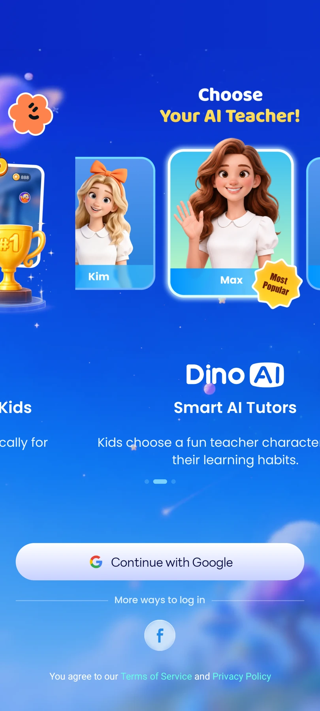
画面来源
DINO-welcome-login；观察窗口2026-10-03—14
原始PNG字节，页面显示缩放。
2026-10-16 完整版 · 10月3—14日真实体验证据
五款App各一条完整视频，按章节查看；每一步文字紧接真实画面，八个共同模块直接对照Dino与竞品的图片、视频、优劣和优化点。
5款App · 90个交互节点 · 8个共同模块 · 50段合为5条 · 约14.4小时
阅读方式：每张图可点击放大；视频预览在对应文字下，默认不自动播放。图片为真实截图/视频帧的展示副本，原PNG与原始录制另行保留。
儿童产品为Dino AI、Buddy.ai、Lingokids；Speak、Duolingo仅作为成人产品交互参照。以下判断来自本次代表性免费流程，不是市场份额、真实学习效果或付费转化比较。
| App / 完整视频 | 已观察链路与长处 | 不足、未通分支与对Dino的启发 |
|---|---|---|
| Dino AI | 老师情境串起任务、奖励、单课报告与自主模块；普通重开保留档案和主课完成标记。 | 本样本报告同时显示8次互动、0 Speaking Turns/Words Spoken；自由聊纠错与结构课应分别验证。优先让任务目标、有效提交和报告口径一致。 |
| Buddy.ai | 免费主题和词卡可先体验，无需先建Buddy账户；错误选项、地图和奖励直观。 | 部分无输入/提示也推进，不能以奖励当识别正确。Dino可借鉴低门槛价值兑现，同时明确判定依据。 |
| Lingokids | Astronaut122三本任务册、检查与证书构成多模态闭环；家长活动数15普通重开保持。 | Astronomer166的Match原生崩溃仍未通；无声也可跳过口语邀请。课程20项与家长15项分母不同，Dino报告需解释口径。 |
| Speak | 讲解、练习、应用对话、复习分层；自定义5问形成摘要与3句预览。 | 首访谈摘要与自报不符，个别纠错可违背目标句。Dino可借鉴分层和解释，需验证画像可修正及任务约束。 |
| Duolingo | 游客先首课，再提示建档；错误答案后有正确解释和末尾错题重练。 | 账号/订阅功能门槛单列；13XP/87%仅为App结果。Dino可优先验证错误回合的修复闭环。 |
身份衔接、免费课程、正常/错误/提示/重试/无输入、课后、权益与重开分别说明；未执行或技术受阻的分支明确保留。详细证据和优化验证方案见下文各App、八模块与优化点。
1.8.2（本轮既有样本） · 10/03首次入口与首课 + 10/04续课 + 后续自主模块/自由聊天；跨批代表链，不是单一无剪辑全程。
本App模拟器与工具路线 · 每步文字下直接看画面，点击图片可放大。
14 个完整文件按体验顺序合并 · 03:35:49 · 144,450 帧 · 788.0 MB。章节标记对应原文件边界，跨批次过程、等待、重试和诊断均保留。
点击播放或选择章节；直接拖动可查看全部过程。保留已有音轨；部分近静音，声源与音画同步尚未确认。
源视频帧全部保留，合片没有再次压缩视频或音频。为避免跨文件 B 帧时标重叠，章节边界共保留 0.000 秒封装间隔；未添加视频帧或音频。完整文件不等于全部业务分支成功。
MP4 SHA-256：b2d0d6fb1b373ccb4c8a9ebd99f04f2eb3c927a9e15384f486159a57ab68add2
欢迎页用老师角色介绍学习体验，并提供 Google 与 Facebook 身份入口。本次样本随后进入学习档案设置。

DINO-welcome-login；观察窗口2026-10-03—14
原始PNG字节，页面显示缩放。
学习档案从昵称页开始。页面提供昵称输入区域，接下来的年龄与基础问题用于继续建立学习档案。
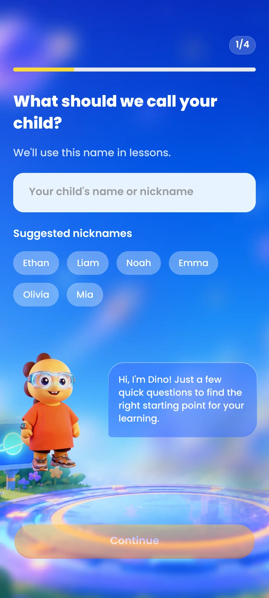
DINO-onboarding-name-empty；2026-10-03T05:18:37.566281Z
真实截图等比缩小的Q92 WebP展示副本；未裁切/涂改；原始PNG保留。
年龄与英语基础分别设页选择。本次使用虚构的六岁档案，基础选为 Just starting，随后继续引导。
DINO-onboarding-age；观察窗口2026-10-03—14
原始PNG字节，页面显示缩放。
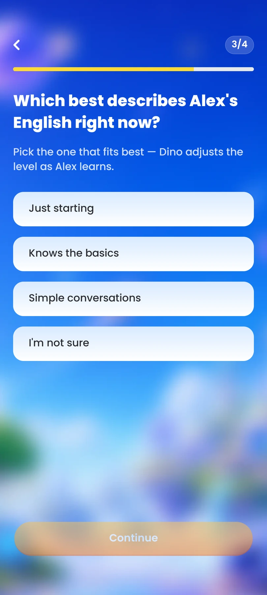
DINO-onboarding-level；2026-10-03T05:20:09.201557Z
真实截图等比缩小的Q92 WebP展示副本；未裁切/涂改；原始PNG保留。
目标页显示已到第四步，继续后可选老师。本次选择 Kim，之后进入由该老师出场的体验课堂。
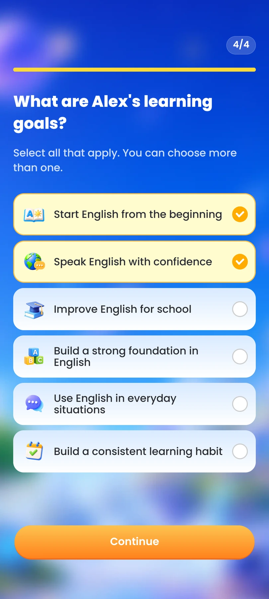
DINO-after-device-recovery；2026-10-03T05:28:57.988418Z
真实截图等比缩小的Q92 WebP展示副本；未裁切/涂改；原始PNG保留。
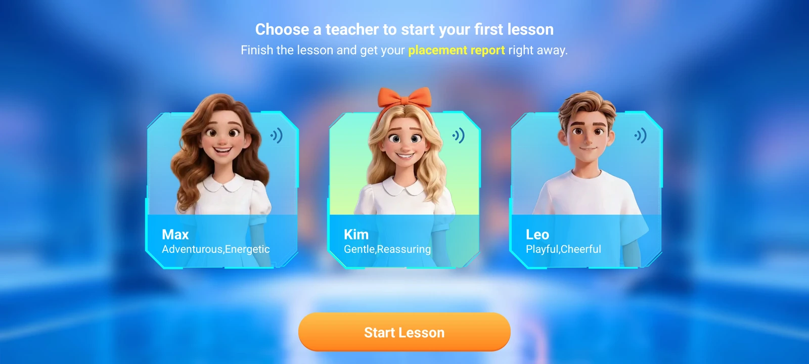
DINO-teacher-kim-selected；2026-10-03T05:36:53.519868Z
真实截图等比缩小的Q92 WebP展示副本；未裁切/涂改；原始PNG保留。
进入课堂后，老师角色与食物场景同时出现。画面依次展示初始互动，以及 Apple 环节之后的课堂状态。
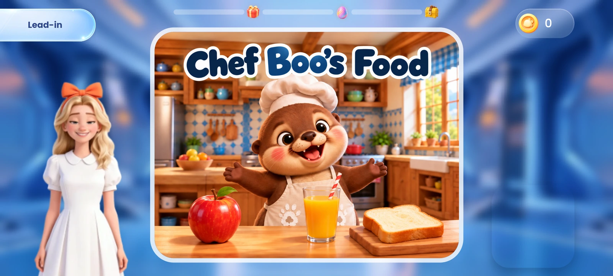
DINO-classroom-001；2026-10-03T05:40:57.985743Z
真实截图等比缩小的Q92 WebP展示副本；未裁切/涂改；原始PNG保留。
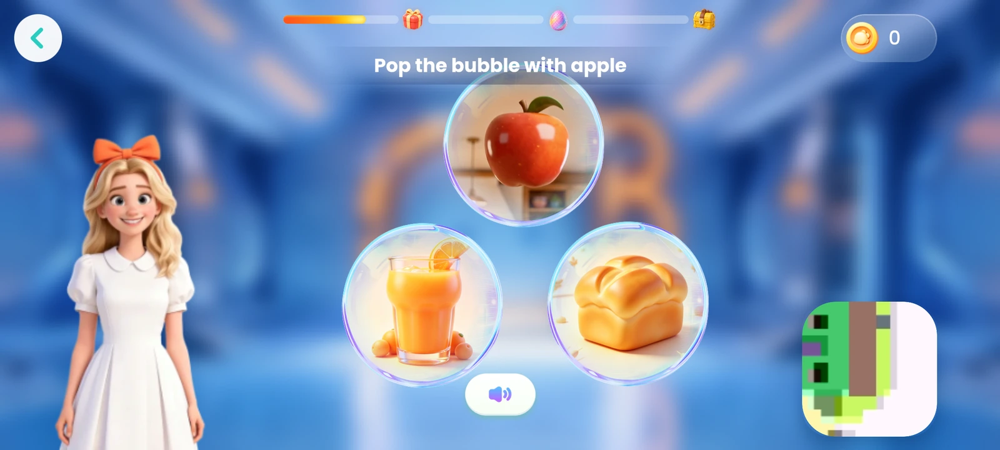
DINO-classroom-006-after-apple；2026-10-03T05:45:16.589471Z
真实截图等比缩小的Q92 WebP展示副本；未裁切/涂改；原始PNG保留。
课堂中穿插礼物选择和开礼物页面。礼物画面与随后继续学习的状态，构成体验课中的奖励节点。
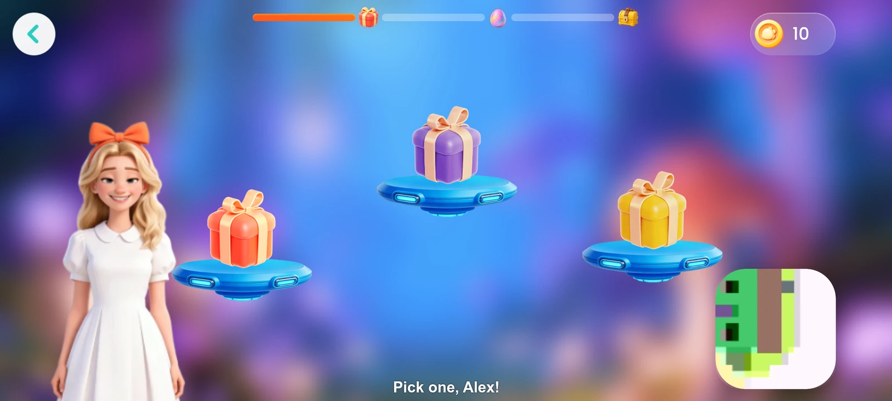
DINO-classroom-009-gift-choice；2026-10-03T05:47:08.821037Z
真实截图等比缩小的Q92 WebP展示副本；未裁切/涂改；原始PNG保留。
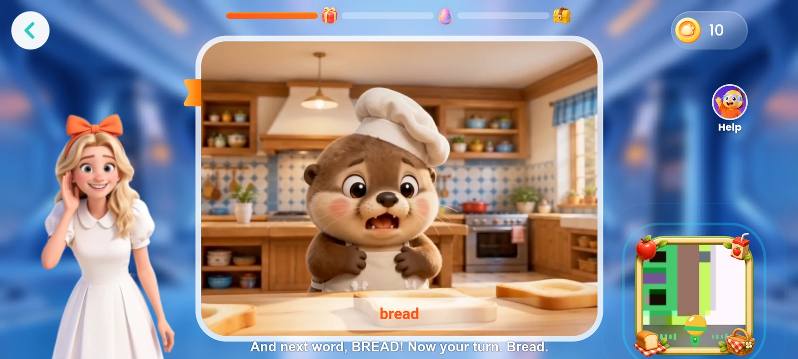
DINO-classroom-010-open-gift；2026-10-03T05:47:45.084908Z
真实截图等比缩小的Q92 WebP展示副本；未裁切/涂改；原始PNG保留。
Bread 听词环节先点到 Apple 选项，随后改选并继续。相邻画面展示选择后的状态与正确分支转换。
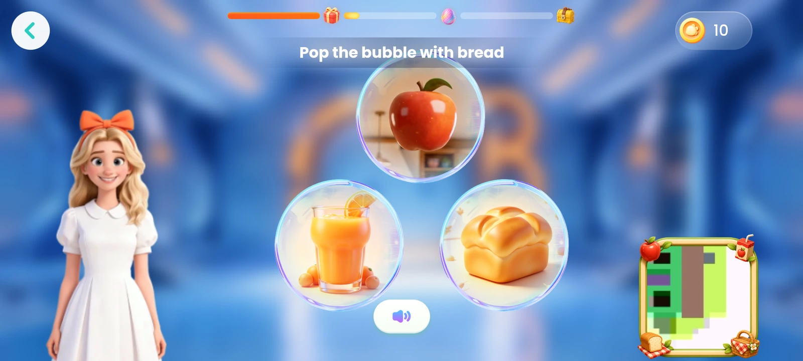
DINO-CONT-bread-match-wrong；2026-10-03T18:32:38.342342Z
真实截图等比缩小的Q92 WebP展示副本；未裁切/涂改；原始PNG保留。
DINO-CONT-bread-match-correct-transition；2026-10-03T18:33:07.034552Z
真实截图等比缩小的Q92 WebP展示副本；未裁切/涂改；原始PNG保留。
DINO-CONT-bread-after-correct-readback；2026-10-03T18:34:00.254603Z
真实截图等比Q92 WebP展示副本；未裁切/涂改；原始PNG保留。
点击麦克风后进入录音相关状态，随后出现 Send 提交后的页面。接下来的课堂内容已切换到 Juice。
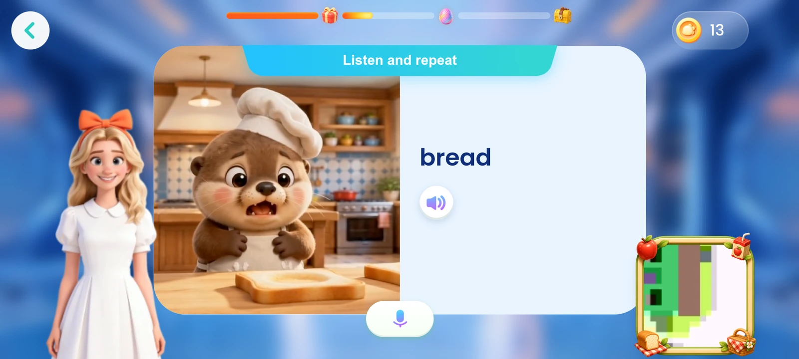
DINO-CONT-bread-mic-after-tap；2026-10-03T18:45:20.790597Z
真实截图等比缩小的Q92 WebP展示副本；未裁切/涂改；原始PNG保留。
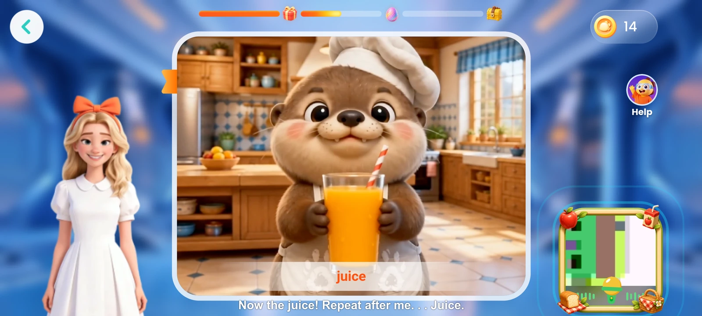
DINO-CONT-bread-send-result；2026-10-03T18:47:30.266464Z
真实截图等比缩小的Q92 WebP展示副本；未裁切/涂改；原始PNG保留。
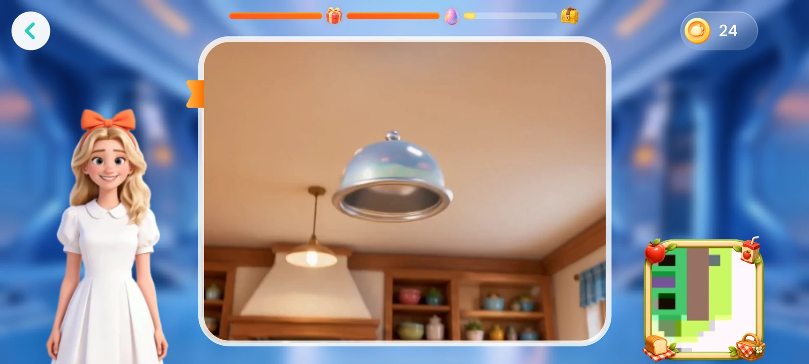
DINO-CONT-juice-current-state；2026-10-03T18:51:02.539292Z
真实截图等比Q92 WebP展示副本；未裁切/涂改；原始PNG保留。
149.59秒 · 无声 · 单独打开播放
DINO-CONT-CLIP-bread-mic-send-to-juice。本片从既有149.556秒连续观看片转为无声H264，首帧归零；不剪压等待。原始MKV的异常录制状态仍保留，不宣称音画同步或完整采集成功。
课堂 Help 菜单提供求助选项。选择 Ask Dino for Help 后，画面显示求助状态以及老师给出的回应。
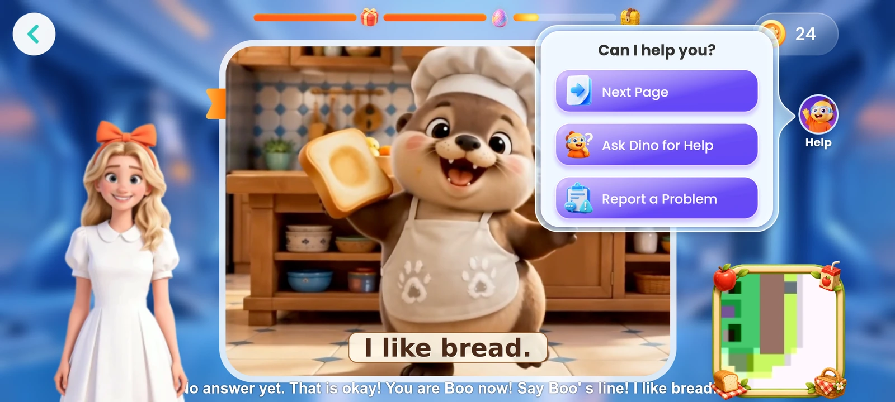
DINO-CONT-class-help-open；2026-10-03T18:52:12.720414Z
真实截图等比缩小的Q92 WebP展示副本；未裁切/涂改；原始PNG保留。
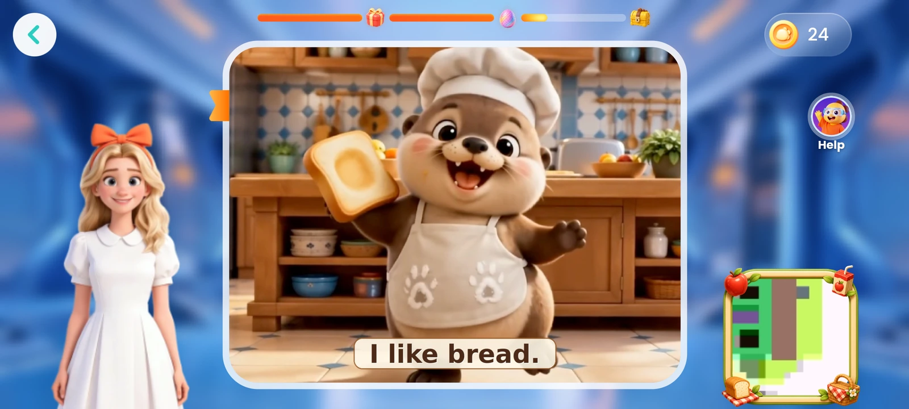
DINO-CONT-ask-dino-help-state；2026-10-03T18:52:48.699648Z
真实截图等比缩小的Q92 WebP展示副本；未裁切/涂改；原始PNG保留。
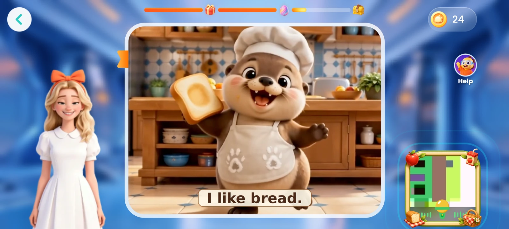
DINO-CONT-ask-dino-help-response；2026-10-03T18:53:21.884397Z
真实截图等比Q92 WebP展示副本；未裁切/涂改；原始PNG保留。
体验课走到 Lesson Complete，并呈现合照、宝箱和反馈页面。反馈提交后，下一步进入单课报告入口。
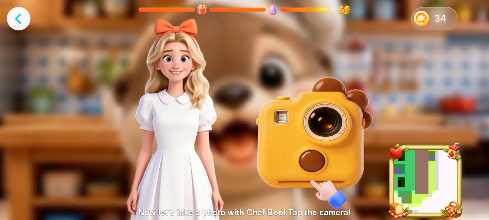
DINO-CONT-completion-current-before-photo；2026-10-03T18:59:43.912030Z
真实截图等比缩小的Q92 WebP展示副本；未裁切/涂改；原始PNG保留。
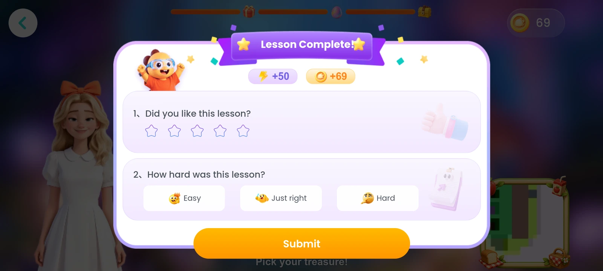
DINO-CONT-class-treasure-selected；2026-10-03T19:01:37.730019Z
真实截图等比缩小的Q92 WebP展示副本；未裁切/涂改；原始PNG保留。
Trial Report 汇总老师反馈、词句卡和奖励。本次显示八次互动，同时列出口语回合和说出词数均为零。
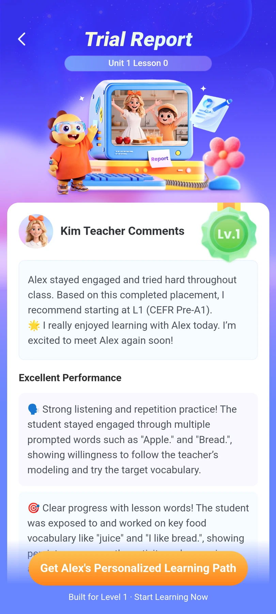
DINO-CONT-lesson-return-report-entry；2026-10-03T19:03:24.265656Z
真实截图等比Q92 WebP展示副本；未裁切/涂改；原始PNG保留。
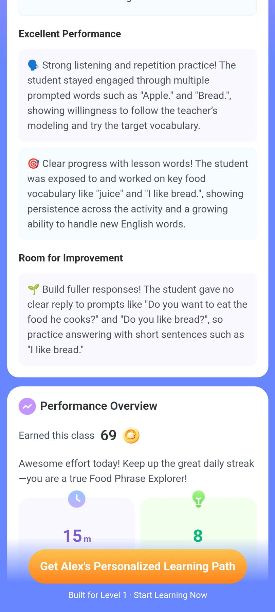
DINO-CONT-trial-report-feedback-detail；2026-10-03T19:04:10.449386Z
真实截图等比缩小的Q92 WebP展示副本；未裁切/涂改；原始PNG保留。
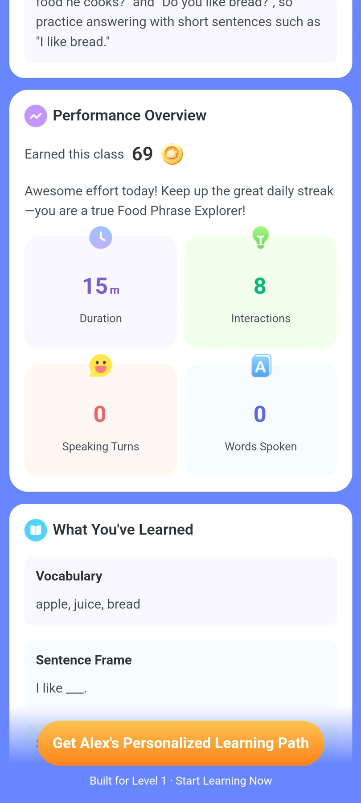
DINO-CONT-trial-report-metrics-and-rewards；观察窗口2026-10-03—14
原始PNG字节，页面显示缩放。
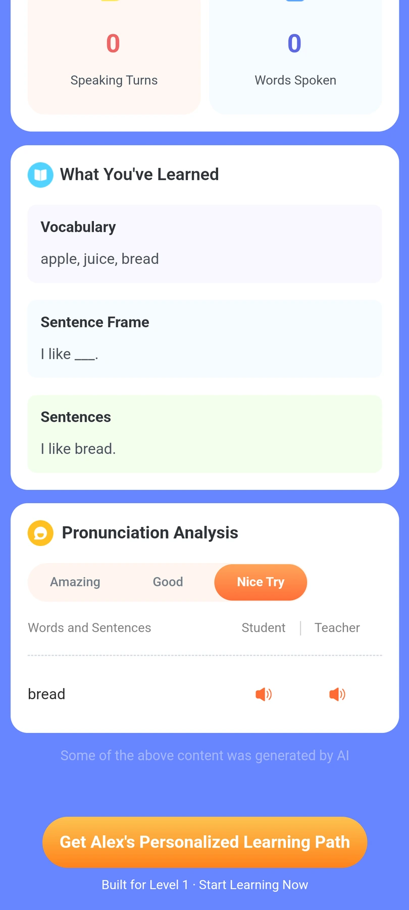
DINO-CONT-trial-report-bottom；2026-10-03T19:06:26.705797Z
真实截图等比Q92 WebP展示副本；未裁切/涂改；原始PNG保留。
报告之后可进入个性化学习路径，查看 Pro 与 Max 计划。页面分别呈现课次安排、教师特点和学习目标。
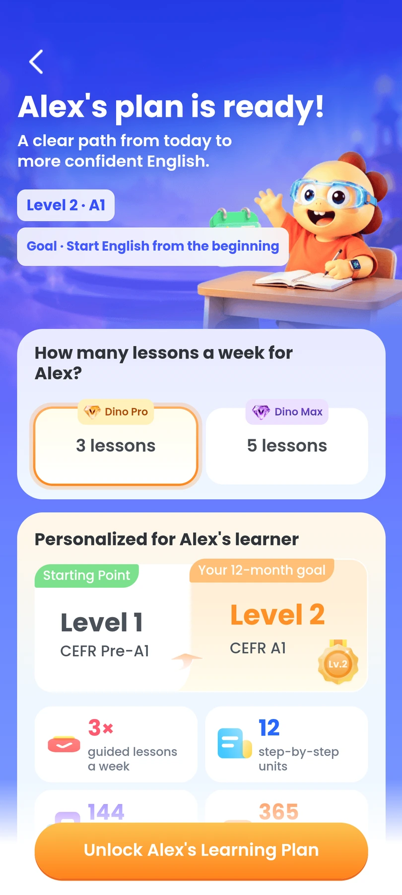
DINO-CONT-personalized-path-cta-result；2026-10-03T19:09:10.746074Z
真实截图等比缩小的Q92 WebP展示副本；未裁切/涂改；原始PNG保留。
DINO-CONT-learning-plan-pro-details；观察窗口2026-10-03—14
原始PNG字节，页面显示缩放。
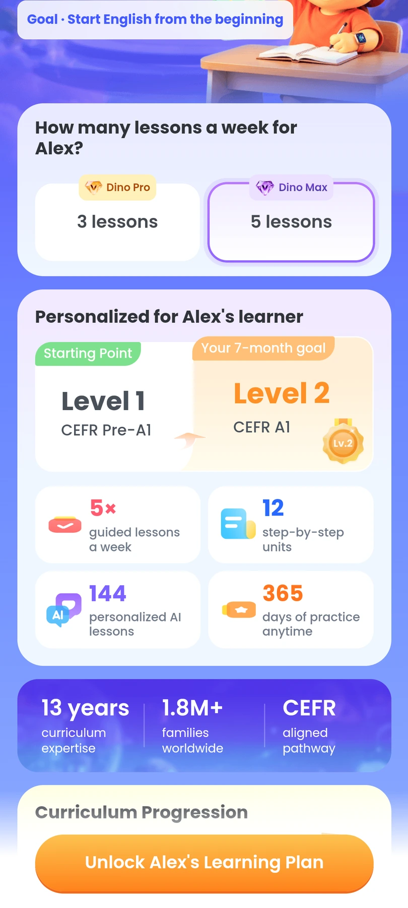
DINO-MOD-max-plan-selected；2026-10-03T20:18:04.549059Z
真实截图等比缩小的Q92 WebP展示副本；未裁切/涂改；原始PNG保留。
Words 模块可从 Rooms 内容进入代表题目。题目页面之后有完成状态，形成独立于体验课的词汇练习。
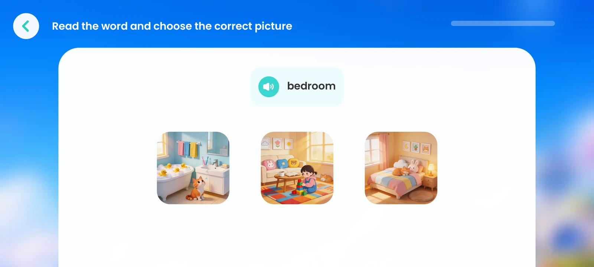
DINO-words-rooms-loaded；2026-10-03T10:02:23.879746Z
真实截图等比缩小的Q92 WebP展示副本；未裁切/涂改；原始PNG保留。
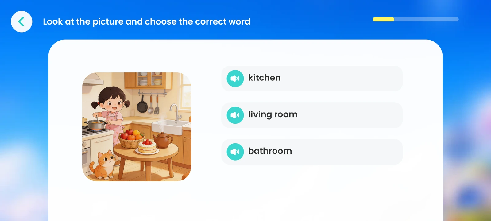
DINO-words-rooms-question-02；2026-10-03T10:03:21.567653Z
真实截图等比缩小的Q92 WebP展示副本；未裁切/涂改；原始PNG保留。
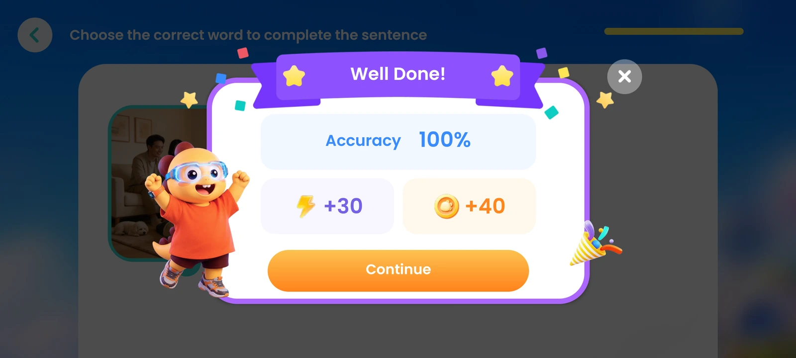
DINO-words-rooms-completed；2026-10-03T10:09:29.679450Z
真实截图等比Q92 WebP展示副本；未裁切/涂改；原始PNG保留。
Radio 页面提供播放、字幕、暂停和列表控制。对应截图分别展示播放中的字幕、暂停状态及内容末态。
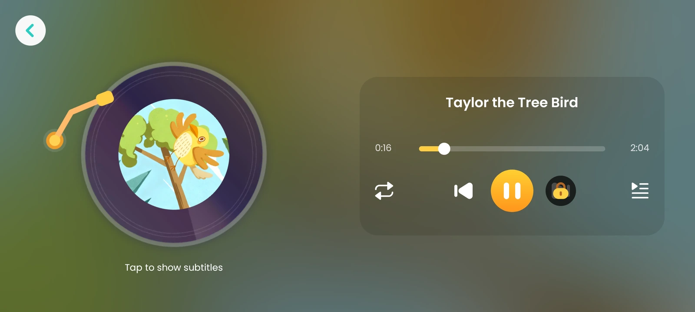
DINO-MOD-radio-first-play；2026-10-03T20:19:41.907136Z
真实截图等比缩小的Q92 WebP展示副本；未裁切/涂改；原始PNG保留。
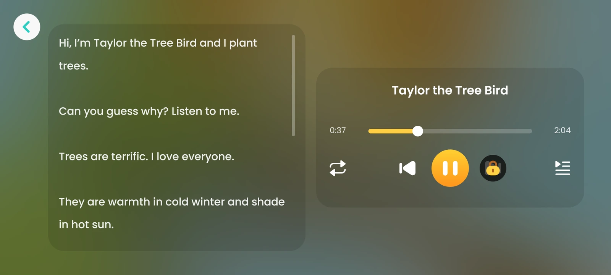
DINO-MOD-radio-subtitles；2026-10-03T20:20:02.567570Z
真实截图等比缩小的Q92 WebP展示副本；未裁切/涂改；原始PNG保留。
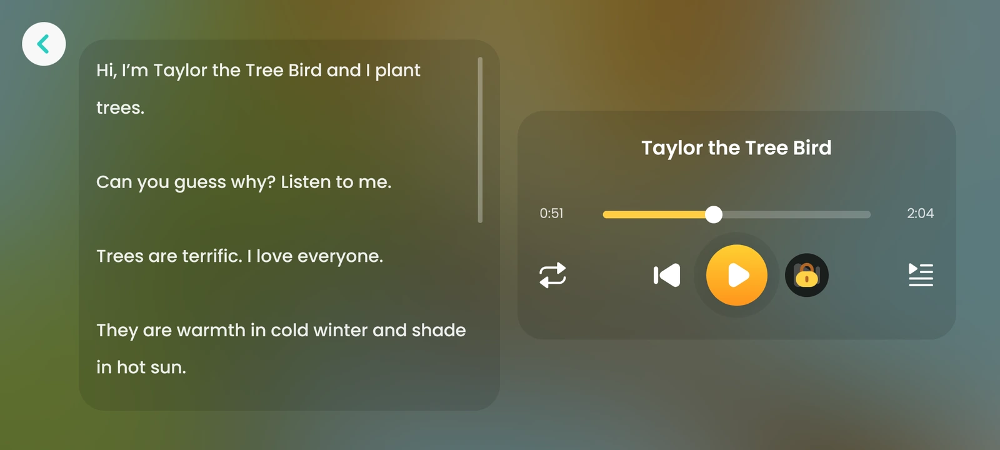
DINO-MOD-radio-paused；2026-10-03T20:20:16.865028Z
真实截图等比缩小的Q92 WebP展示副本；未裁切/涂改；原始PNG保留。
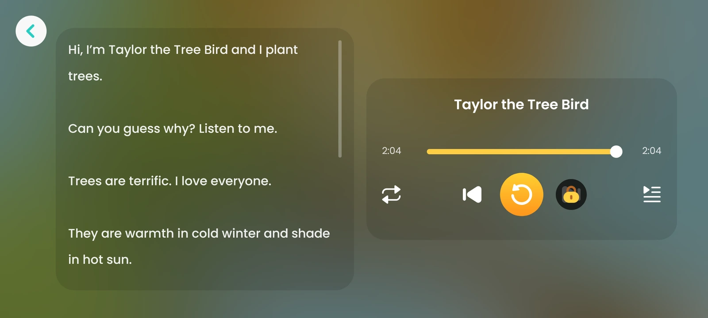
DINO-MOD-radio-end-readback；2026-10-03T20:23:43.695690Z
真实截图等比缩小的Q92 WebP展示副本；未裁切/涂改；原始PNG保留。
63.02秒 · 无声 · 单独打开播放
DINO-MOD-CLIP-radio-controls。公开视频仅保留可读视频轨，首帧时间基归零；无声，实际时长不替代原父源音轨/容器时长。
Blind Box 以题目推进到结果，再展示抽取奖励与本轮完成。答题、获得票券、奖励呈现是不同的页面状态。
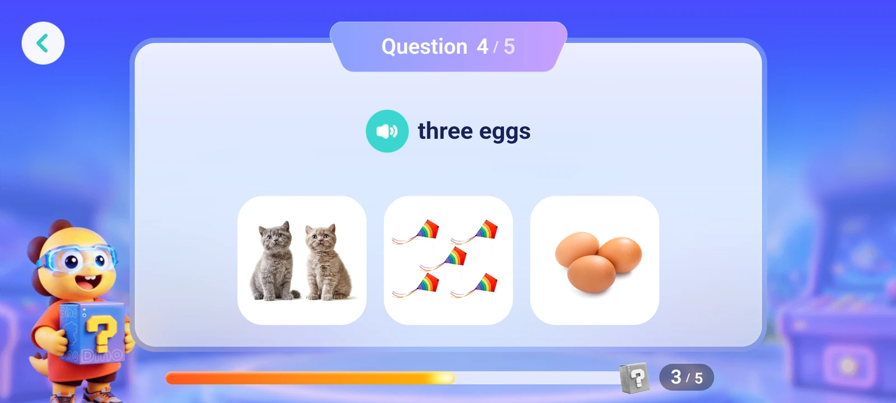
DINO-MOD-blind-box-q4；2026-10-03T20:31:33.921110Z
真实截图等比缩小的Q92 WebP展示副本；未裁切/涂改；原始PNG保留。
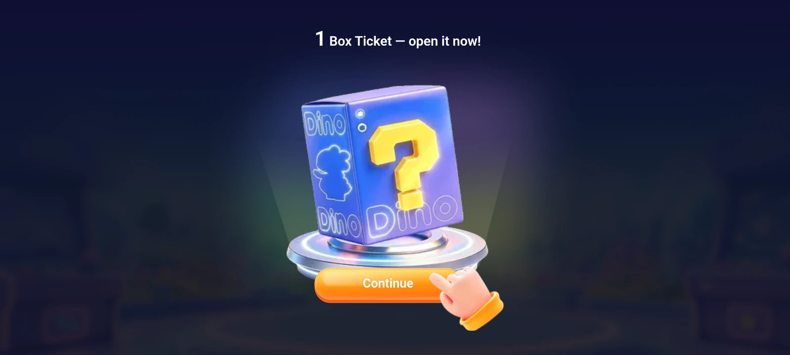
DINO-MOD-blind-box-result；2026-10-03T20:32:42.082930Z
真实截图等比缩小的Q92 WebP展示副本；未裁切/涂改；原始PNG保留。
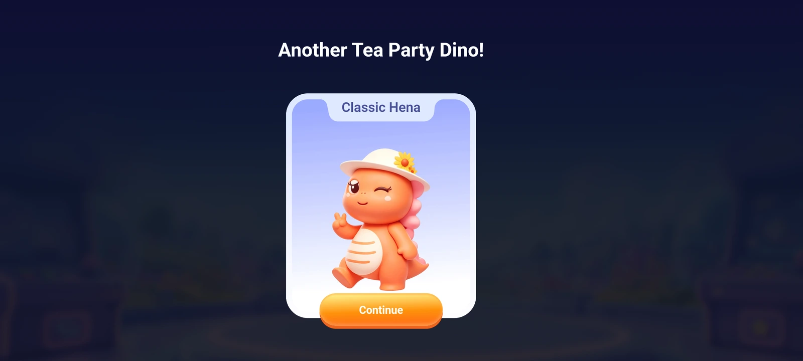
DINO-MOD-blind-box-reward；2026-10-03T20:33:14.690141Z
真实截图等比缩小的Q92 WebP展示副本；未裁切/涂改；原始PNG保留。
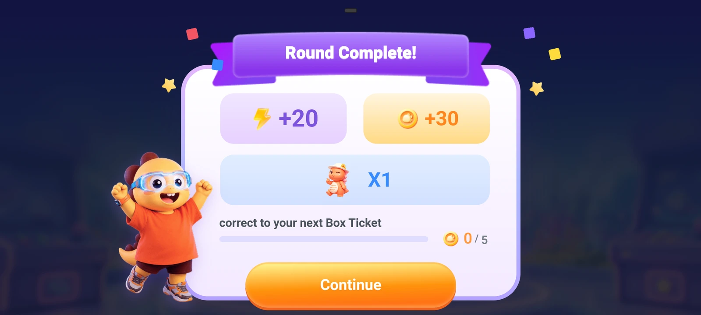
DINO-MOD-blind-box-round-complete；2026-10-03T20:33:39.724166Z
真实截图等比缩小的Q92 WebP展示副本；未裁切/涂改；原始PNG保留。
89.14秒 · 无声 · 单独打开播放
DINO-MOD-CLIP-blind-box-final-reward。公开视频仅保留可读视频轨，首帧时间基归零；无声，实际时长不替代原父源音轨/容器时长。
免费范围在不同入口呈现不同提示：游戏显示每日限额，Radio 锁定内容进入方案页，关闭后还可见优惠页面。
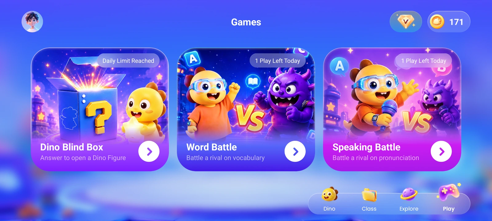
DINO-MOD-play-daily-limit；2026-10-03T20:35:53.359230Z
真实截图等比缩小的Q92 WebP展示副本；未裁切/涂改；原始PNG保留。
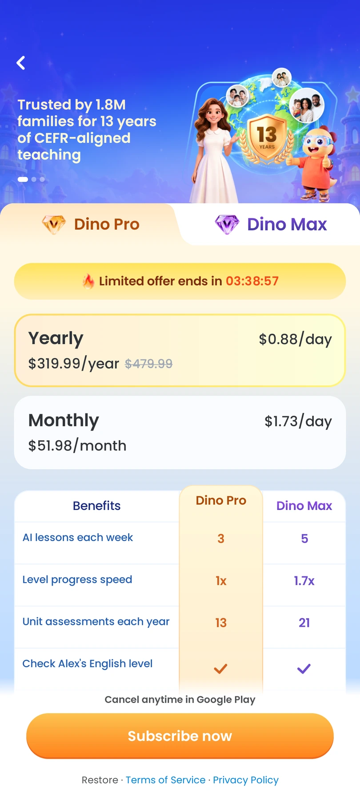
DINO-MOD-radio-locked-paywall；2026-10-03T20:21:05.447969Z
真实截图等比缩小的Q92 WebP展示副本；未裁切/涂改；原始PNG保留。
DINO-MOD-radio-exit-offer；2026-10-03T20:21:45.620301Z
真实截图等比Q92 WebP展示副本；未裁切/涂改；原始PNG保留。
DINO-MOD-blind-box-exit-readback；2026-10-03T20:34:57.378835Z
真实截图等比Q92 WebP展示副本；未裁切/涂改；原始PNG保留。
Speaking 自由聊天中，错句之后出现继续对话的回应；另一次明确请求纠正后，老师给出表达示例。
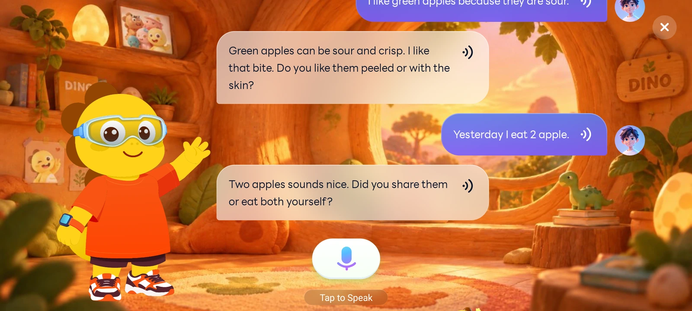
DINO-VOICE-voice-004-response-settled；2026-10-03T21:44:07.083687Z
真实截图等比缩小的Q92 WebP展示副本；未裁切/涂改；原始PNG保留。
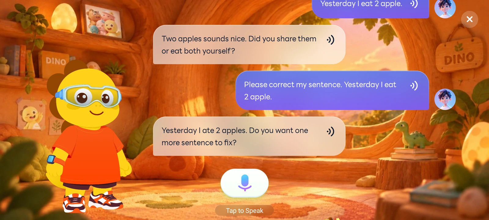
DINO-VOICE-voice-005-response-settled；2026-10-03T21:46:01.044565Z
真实截图等比缩小的Q92 WebP展示副本；未裁切/涂改；原始PNG保留。
65.07秒 · 无声 · 单独打开播放
DINO-VOICE-CLIP-turn004-error-continued-chat。公开视频仅保留可读视频轨，首帧时间基归零；无声，实际时长不替代原父源音轨/容器时长。
80.07秒 · 无声 · 单独打开播放
DINO-VOICE-CLIP-turn005-explicit-correction。公开视频仅保留可读视频轨，首帧时间基归零；无声，实际时长不替代原父源音轨/容器时长。
普通重开后可再次看到首页和既有 Trial Report。报告保留原先的口语计数，后来的自由聊天没有显示在该页。
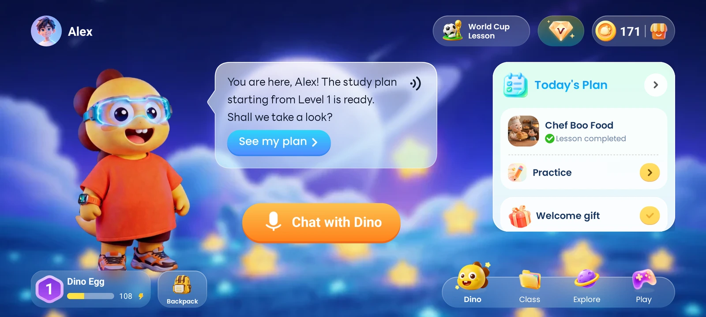
DINO-VOICE-cold-relaunch；2026-10-03T21:21:55.722024Z
真实截图等比缩小的Q92 WebP展示副本；未裁切/涂改；原始PNG保留。
DINO-VOICE-app-reopen-home-final；2026-10-03T22:36:05.692649Z
真实截图等比缩小的Q92 WebP展示副本；未裁切/涂改；原始PNG保留。
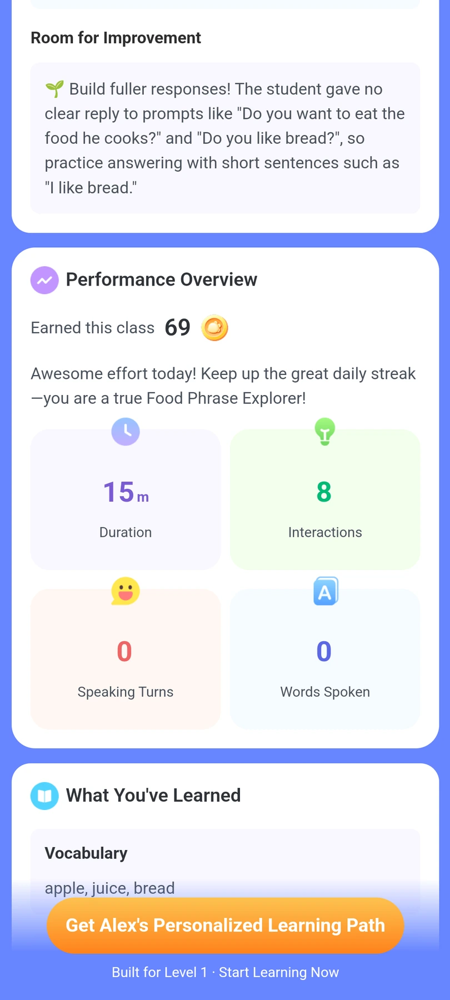
DINO-VOICE-report-reopen-metrics-visible；2026-10-03T22:26:16.244110Z
真实截图等比缩小的Q92 WebP展示副本；未裁切/涂改；原始PNG保留。
6.31/6.32系列（分批观察） · 10/05家长引导与10/06多次免费节点；同地图的跨批续作，不能呈现为一次连续新手课。
本App模拟器与工具路线 · 每步文字下直接看画面，点击图片可放大。
9 个完整文件按体验顺序合并 · 02:05:04 · 114,828 帧 · 967.4 MB。章节标记对应原文件边界，跨批次过程、等待、重试和诊断均保留。
点击播放或选择章节；直接拖动可查看全部过程。原始录屏没有音轨，本合片亦无音轨。
源视频帧全部保留，合片没有再次压缩视频或音频。为避免跨文件 B 帧时标重叠，章节边界共保留 0.216 秒封装间隔；未添加视频帧或音频。完整文件不等于全部业务分支成功。
MP4 SHA-256：c67ff6df5715650869c28a4ab97c65465df5b3bd5f3da01fa2578acd9918ee27
应用以故事和角色介绍开场，展示 Buddy 的世界与学习内容。画面随后出现角色入口，继续引导到家长流程。
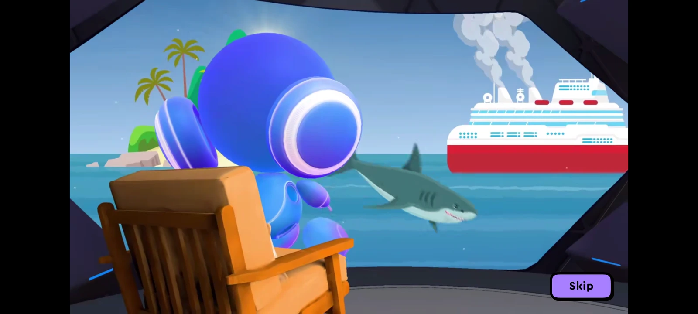
BUDDY-RUNTIME37-STORY；2026-10-05T06:14:48.021756+00:00
真实截图等比缩小的Q92 WebP展示副本；未裁切/涂改；原始PNG保留。
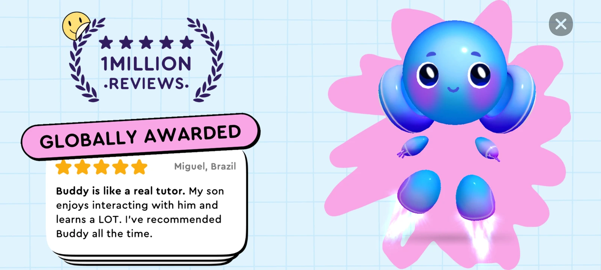
BUDDY-RUNTIME37-MARKETING；2026-10-05T06:15:27.011251+00:00
真实截图等比缩小的Q92 WebP展示副本；未裁切/涂改；原始PNG保留。
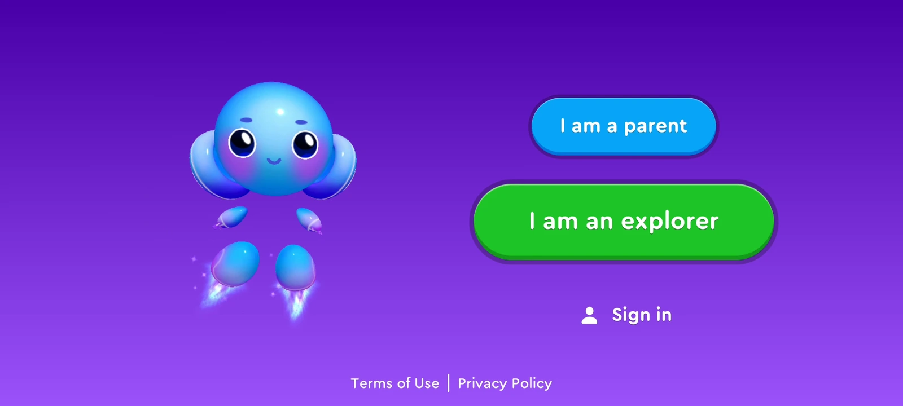
BUDDY-RUNTIME37-ROLE；观察窗口2026-10-03—14
真实截图等比缩小的Q92 WebP展示副本；未裁切/涂改；原始PNG保留。
家长流程提供姓名与年龄相关页面。本次使用虚构的六岁档案，姓名页可跳过，随后展示对应年龄的介绍文案。
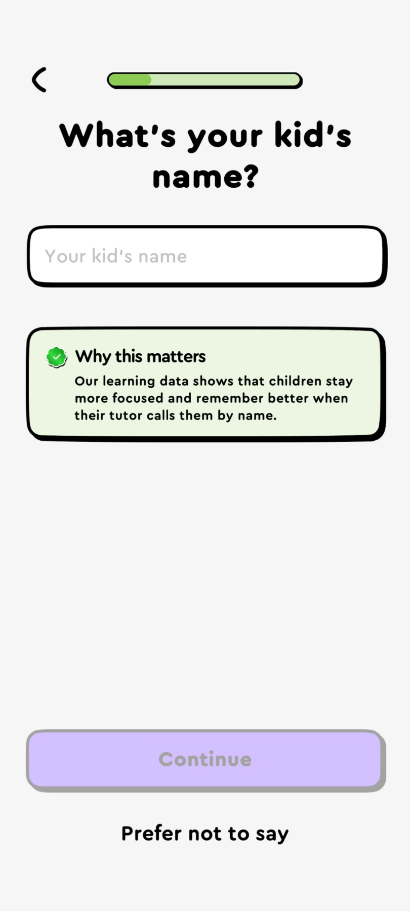
BUDDY-PARENT-NAME；2026-10-05T06:35:48.641925+00:00
真实截图等比缩小的Q92 WebP展示副本；未裁切/涂改；原始PNG保留。
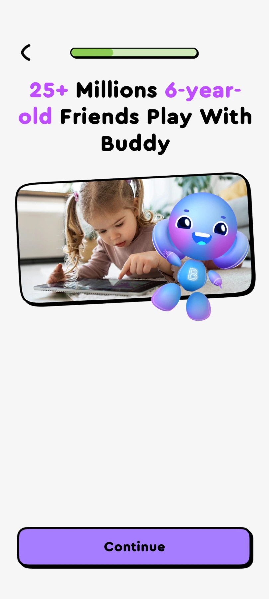
BUDDY-PARENT-AGE-MESSAGE；2026-10-05T06:36:56.775707+00:00
真实截图等比缩小的Q92 WebP展示副本；未裁切/涂改；原始PNG保留。
兴趣问题提供 Animals、Dinos 等选项，另有沟通特点问题。不同问题分步呈现，之后继续补充学习情况。
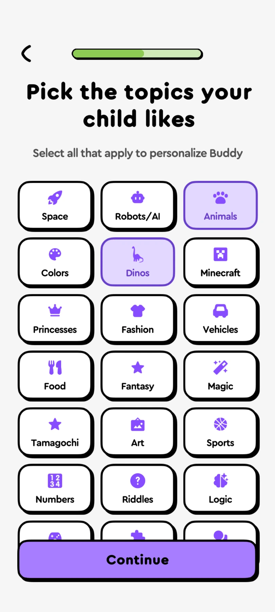
BUDDY-PARENT-INTERESTS；2026-10-05T06:38:37.092008+00:00
真实截图等比缩小的Q92 WebP展示副本；未裁切/涂改；原始PNG保留。
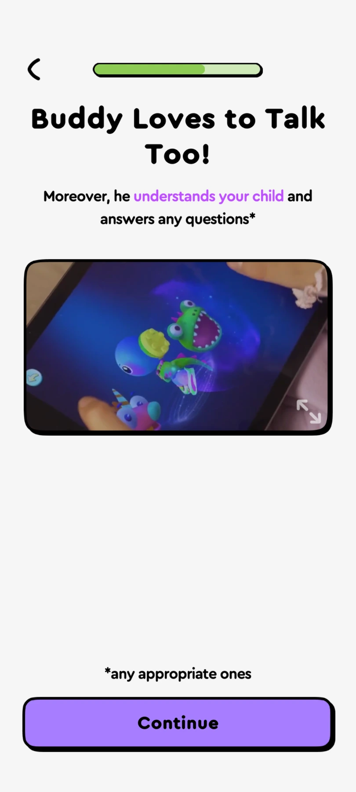
BUDDY-PARENT-DEMO；2026-10-05T06:39:57.793737+00:00
真实截图等比缩小的Q92 WebP展示副本；未裁切/涂改；原始PNG保留。
问卷进一步询问识字和数学水平，分别呈现字母、数字相关选项。它们与前面的兴趣回答共同组成引导内容。
BUDDY-PARENT2-READING；观察窗口2026-10-03—14
原始PNG字节，页面显示缩放。
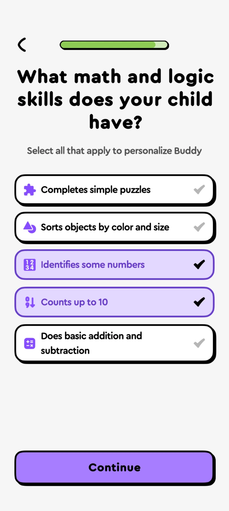
BUDDY-PARENT2-MATH；2026-10-05T08:50:21.067186+00:00
真实截图等比缩小的Q92 WebP展示副本；未裁切/涂改；原始PNG保留。
回答后依次出现 Personalizing、Ready 和 Try Buddy World 页面，用生成计划的过程把家长问卷连接到学习世界。
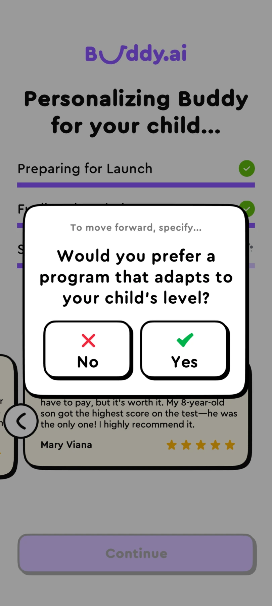
BUDDY-PARENT2-PERSONALIZING；2026-10-05T08:54:40.004083+00:00
真实截图等比缩小的Q92 WebP展示副本；未裁切/涂改；原始PNG保留。
BUDDY-PARENT2-READY；2026-10-05T08:55:31.573655+00:00
真实截图等比缩小的Q92 WebP展示副本；未裁切/涂改；原始PNG保留。
BUDDY-PARENT2-TRY-WORLD；2026-10-05T08:57:08.725720+00:00
真实截图等比Q92 WebP展示副本；未裁切/涂改；原始PNG保留。
进入学习内容时出现麦克风许可页面。学习目录展示 Listening 等入口，Shapes 则以地图形式组织免费节点。
BUDDY-FIRST-VOICE-ALLOW-MICROPHONE；2026-10-05T21:38:11.464974+00:00
真实截图等比缩小的Q92 WebP展示副本；未裁切/涂改；原始PNG保留。
BUDDY-FIRST-VOICE-LISTENING-STATE；2026-10-05T21:43:18.608168+00:00
真实截图等比缩小的Q92 WebP展示副本；未裁切/涂改；原始PNG保留。
BUDDY-FIRST-VOICE-SHAPES-STATE；2026-10-05T21:44:22.893801+00:00
真实截图等比缩小的Q92 WebP展示副本；未裁切/涂改；原始PNG保留。
卡片练习以颜色与角色图片呈现。下方保留练习中的卡面，以及回到主题地图后的状态；不以地图金币倒推每一张卡的语音识别结果。
BUDDY-FIRST-VOICE-006-CARDS-FOUR；2026-10-05T23:56:08.200287+00:00
真实截图等比缩小的Q92 WebP展示副本；未裁切/涂改；原始PNG保留。
BUDDY-FIRST-VOICE-006-CARDS-FIVE；2026-10-05T23:56:52.001970+00:00
真实截图等比缩小的Q92 WebP展示副本；未裁切/涂改；原始PNG保留。
BUDDY-FIRST-VOICE-006-CHARACTER-PROMPT；2026-10-05T23:58:11.301096+00:00
真实截图等比Q92 WebP展示副本；未裁切/涂改；原始PNG保留。
听词节点中，本次故意选择 black。画面保留错误选择后的状态，下一步再按提示改选 white 完成同一节点。
改选 white 后出现完成状态，并提供领奖入口。正确分支与之前的错选属于同一个听词任务，可以前后对照。
BUDDY-011-WHITE-COMPLETE-PNG；2026-10-06T03:28:58.936027+00:00
真实截图等比缩小的Q92 WebP展示副本；未裁切/涂改；原始PNG保留。
BUDDY-011-CLAIM-PROMPT-PNG；2026-10-06T03:31:14.126270+00:00
真实截图等比缩小的Q92 WebP展示副本；未裁切/涂改；原始PNG保留。
18.06秒 · 无声 · 单独打开播放
BUDDY-011-CORRECT-WHITE-CLIP。公开视频仅保留可读视频轨，首帧时间基归零；无声，实际时长不替代原父源音轨/容器时长。
点击领奖后回到地图，页面展示新的余额与后续节点。奖励结果和下一步入口在地图上同时可见。
口语练习的 purple 卡片经过合成输入后出现反馈。截图分别展示输入后的角色状态，以及随后稳定的反馈页面。
另一张 white 卡片在未提交语音的等待过程中出现提示。两张截点展示提示后与继续等待时的页面状态。
gray 卡片先展示题目，再展示故意说 white 后的反馈。该组与 purple、pink 是不同卡片，按练习顺序展示。
末张卡片之后出现 pink 反馈，再回到完成地图。题目、反馈和地图结果分别对应语音节点的不同阶段。
BUDDY-FIRST-VOICE-013-LAST-CARD-READY-01；2026-10-06T04:46:08.312975+00:00
真实截图等比Q92 WebP展示副本；未裁切/涂改；原始PNG保留。
BUDDY-FIRST-VOICE-013-PINK-FEEDBACK-02；2026-10-06T04:46:42.370230+00:00
真实截图等比缩小的Q92 WebP展示副本；未裁切/涂改；原始PNG保留。
BUDDY-FIRST-VOICE-013-MAP-AFTER-VOICE-02；2026-10-06T04:47:45.803269+00:00
真实截图等比缩小的Q92 WebP展示副本；未裁切/涂改；原始PNG保留。
颜色记忆配对以翻牌板进行，完成后回到地图。配对板的状态和完成地图可一起说明这个独立游戏节点。
从学习内容返回管理区域后，家长年份门槛与Settings分别呈现。下方直接展示门槛和设置页，本轮只查看，没有切换设置。
家长页可进入账户设置。页面显示创建账户需要订阅，Create account 灰显，同时保留 Sign In 入口。
等级设置中 Kindergarten 选项高亮，随后可返回家长区域。本次只查看已有等级和返回状态，没有切换等级。
26.40.0（最新完整课样本） · 075–079的Astronaut完整代表课：起始Knowledge Check + Book1 + Book2 + Book3 + 最终Progress Check。077/078重启续作；旧Astronomer/166崩溃另列，不混入完成课。
本App模拟器与工具路线 · 每步文字下直接看画面，点击图片可放大。
5 个完整文件按体验顺序合并 · 02:25:05 · 48,049 帧 · 385.2 MB。章节标记对应原文件边界，跨批次过程、等待、重试和诊断均保留。
点击播放或选择章节；直接拖动可查看全部过程。原始录屏没有音轨，本合片亦无音轨。
源视频帧全部保留，合片没有再次压缩视频或音频。为避免跨文件 B 帧时标重叠，章节边界共保留 1.308 秒封装间隔；未添加视频帧或音频。完整文件不等于全部业务分支成功。
MP4 SHA-256：86201ef6fae7ddbdd7f1943be64d042ceae6f286b75d113643827ef4ad757f98
本次从免费首页进入 Astronaut 课程，课程页提供主题说明与地图。后续按照起始检查和三本学习单元继续。
课程先进入 Knowledge Check，出现关于太空主题的问题。Moon 题选择之后，地图展示起始检查已完成的勾。
lingo75-astronaut-question-012；观察窗口2026-10-03—14
真实截图等比缩小的Q92 WebP展示副本；未裁切/涂改；原始PNG保留。
lingo75-check-moon-select-024；观察窗口2026-10-03—14
真实截图等比Q92 WebP展示副本；未裁切/涂改；原始PNG保留。
L75-CHECK；观察窗口2026-10-03—14
真实截图等比缩小的Q92 WebP展示副本；未裁切/涂改；原始PNG保留。
第一本 Explore 通过多个页面介绍宇宙飞船、科学家与职业。完成引导后回到地图，Explore 节点显示完成。
lingo76-explore-spaceship-013；观察窗口2026-10-03—14
真实截图等比缩小的Q92 WebP展示副本；未裁切/涂改；原始PNG保留。
lingo76-explore-scientists-020；观察窗口2026-10-03—14
真实截图等比缩小的Q92 WebP展示副本；未裁切/涂改；原始PNG保留。
lingo76-explore-map-023；观察窗口2026-10-03—14
真实截图等比Q92 WebP展示副本；未裁切/涂改；原始PNG保留。
Collect 先展示操作教程，再进入飞行和收集任务。画面分别呈现操作中的角色状态与放开控制后的页面。
lingo76-collect-tutorial-028；观察窗口2026-10-03—14
真实截图等比缩小的Q92 WebP展示副本；未裁切/涂改；原始PNG保留。
lingo76-collect-fly-up-029；观察窗口2026-10-03—14
真实截图等比缩小的Q92 WebP展示副本；未裁切/涂改；原始PNG保留。
lingo76-collect-released-031；观察窗口2026-10-03—14
真实截图等比Q92 WebP展示副本；未裁切/涂改；原始PNG保留。
工具配对先给出配对板，本次故意把相机配错，再按提示改正。随后面板出现正确状态，最后显示活动完成。
lingo76-match-tools-board-036；观察窗口2026-10-03—14
真实截图等比Q92 WebP展示副本；未裁切/涂改；原始PNG保留。
lingo76-match-wrong-camera-037；观察窗口2026-10-03—14
真实截图等比缩小的Q92 WebP展示副本；未裁切/涂改；原始PNG保留。
lingo76-match-panel-correct-041；观察窗口2026-10-03—14
真实截图等比缩小的Q92 WebP展示副本；未裁切/涂改；原始PNG保留。
lingo76-match-complete-044；观察窗口2026-10-03—14
真实截图等比Q92 WebP展示副本；未裁切/涂改；原始PNG保留。
第一本还包含 Jobs 和 Review。完成这些活动后，页面显示第一本结束，并继续开放第二本的学习内容。
lingo76-jobs-complete-060；观察窗口2026-10-03—14
真实截图等比Q92 WebP展示副本；未裁切/涂改；原始PNG保留。
lingo76-review-result-077；观察窗口2026-10-03—14
真实截图等比缩小的Q92 WebP展示副本；未裁切/涂改；原始PNG保留。
L76-BOOK1；观察窗口2026-10-03—14
真实截图等比缩小的Q92 WebP展示副本；未裁切/涂改；原始PNG保留。
第二本先讲漂浮与工具相关知识，再进入 Catch 任务。食物和锻炼分别出现在后续游戏阶段中。
地球与月球分类中，本次先把站立人物错投到月球，再改投地球。改正后继续整理，地图最后出现 Sort 勾。
lingo77-sort-board-039；观察窗口2026-10-03—14
真实截图等比Q92 WebP展示副本；未裁切/涂改；原始PNG保留。
lingo77-sort-standing-moon-wrong-041；观察窗口2026-10-03—14
真实截图等比缩小的Q92 WebP展示副本；未裁切/涂改；原始PNG保留。
lingo77-sort-standing-earth-042；观察窗口2026-10-03—14
真实截图等比缩小的Q92 WebP展示副本；未裁切/涂改；原始PNG保留。
L77-SORT；观察窗口2026-10-03—14
真实截图等比缩小的Q92 WebP展示副本；未裁切/涂改；原始PNG保留。
88.03秒 · 无声 · 单独打开播放
lingo-sort。公开视频仅保留可读视频轨，首帧时间基归零；无声，实际时长不替代原父源音轨/容器时长。
ISS 内容以视频播放，播放中的画面与结束后的地图分别留有截图。结束后可继续进入下一项选择活动。
lingo77-iss-video-playing-054；观察窗口2026-10-03—14
真实截图等比缩小的Q92 WebP展示副本；未裁切/涂改；原始PNG保留。
L77-WATCH；观察窗口2026-10-03—14
真实截图等比缩小的Q92 WebP展示副本；未裁切/涂改；原始PNG保留。
139.20秒 · 无声 · 单独打开播放
L77-WATCH-TO-SELECT。由保留的1280×1280已审连续无声片等比转为960×960展示副本；605帧及全部呈现时间戳一致，时长139.20秒。未删帧、剪段或加速；压缩展示不等于无损，完整原片及较大过程片继续保留。
Select 采用赛道问题，页面给出路线反馈。本次结果含红绿反馈，回到地图后仍显示 Select 活动完成。
lingo78-select-first-question-009；观察窗口2026-10-03—14
真实截图等比缩小的Q92 WebP展示副本；未裁切/涂改；原始PNG保留。
L78-SELECT；观察窗口2026-10-03—14
真实截图等比缩小的Q92 WebP展示副本；未裁切/涂改；原始PNG保留。
L78-SELECT-MAP；观察窗口2026-10-03—14
真实截图等比缩小的Q92 WebP展示副本；未裁切/涂改；原始PNG保留。
Order 将生活活动放入顺序板，完成后显示全绿结果。接着观看吃饭视频，第二本结束并开放第三本。
第三本 Explore 继续以图文介绍内容，随后出现口语邀请。本次等待后的地图仍显示 Explore 已完成。
lingo78-book3-explore-page1-052；观察窗口2026-10-03—14
真实截图等比Q92 WebP展示副本；未裁切/涂改；原始PNG保留。
lingo-speaking；观察窗口2026-10-03—14
原始PNG字节，页面显示缩放。
L78-EXPLORE；观察窗口2026-10-03—14
真实截图等比缩小的Q92 WebP展示副本；未裁切/涂改；原始PNG保留。
39.43秒 · 无声 · 单独打开播放
lingo-speaking-auto。公开视频仅保留可读视频轨，首帧时间基归零；无声，实际时长不替代原父源音轨/容器时长。
Match 包含数字和团队合作等内容页，之后返回活动完成状态。这里将题目内容与完成地图相邻展示。
lingo78-b3match-numbers-068；观察窗口2026-10-03—14
真实截图等比缩小的Q92 WebP展示副本；未裁切/涂改；原始PNG保留。
lingo78-b3match-teamwork-072；观察窗口2026-10-03—14
真实截图等比缩小的Q92 WebP展示副本；未裁切/涂改；原始PNG保留。
L78-MATCH；观察窗口2026-10-03—14
真实截图等比Q92 WebP展示副本；未裁切/涂改；原始PNG保留。
Choose 继续围绕健康食物、休息和锻炼提问。题目页之后有单独的 Choose 完成结果，供继续下一活动。
lingo78-b3choose-healthy-food-084；观察窗口2026-10-03—14
真实截图等比缩小的Q92 WebP展示副本；未裁切/涂改；原始PNG保留。
lingo78-b3choose-rest-085；观察窗口2026-10-03—14
真实截图等比缩小的Q92 WebP展示副本；未裁切/涂改；原始PNG保留。
L78-CHOOSE；观察窗口2026-10-03—14
真实截图等比Q92 WebP展示副本；未裁切/涂改；原始PNG保留。
Sort 将活动分为独自完成与共同完成，完成后地图出现勾。普通重开后接续 Review，并到达该复习活动的结果。
lingo78-b3sort-alone-sand-095；观察窗口2026-10-03—14
真实截图等比Q92 WebP展示副本；未裁切/涂改；原始PNG保留。
lingo78-b3sort-together-ball-096；观察窗口2026-10-03—14
真实截图等比Q92 WebP展示副本；未裁切/涂改；原始PNG保留。
L78-SORT；观察窗口2026-10-03—14
真实截图等比缩小的Q92 WebP展示副本；未裁切/涂改；原始PNG保留。
L79-REVIEW；观察窗口2026-10-03—14
真实截图等比缩小的Q92 WebP展示副本；未裁切/涂改；原始PNG保留。
最终Progress Check依次出现实验、漂浮、锻炼和月球四个主题。下方展示题目反馈，完成后的证书与后继推荐在下一步对照。
L79-CHECK1；观察窗口2026-10-03—14
真实截图等比缩小的Q92 WebP展示副本；未裁切/涂改；原始PNG保留。
L79-CHECK2；观察窗口2026-10-03—14
真实截图等比缩小的Q92 WebP展示副本；未裁切/涂改；原始PNG保留。
L79-CHECK3；观察窗口2026-10-03—14
真实截图等比Q92 WebP展示副本；未裁切/涂改；原始PNG保留。
L79-CHECK4；观察窗口2026-10-03—14
真实截图等比Q92 WebP展示副本；未裁切/涂改；原始PNG保留。
课程地图显示三本学习单元完成，随后可以打开证书。证书页标明三单元完成，并连接到后继课程推荐。
lingo79-completed-course-map-039；观察窗口2026-10-03—14
真实截图等比缩小的Q92 WebP展示副本；未裁切/涂改；原始PNG保留。
lingo-certificate；观察窗口2026-10-03—14
原始PNG字节，页面显示缩放。
lingo79-certificate-readback-043；观察窗口2026-10-03—14
真实截图等比Q92 WebP展示副本；未裁切/涂改；原始PNG保留。
lingo79-check-map-036；观察窗口2026-10-03—14
真实截图等比缩小的Q92 WebP展示副本；未裁切/涂改；原始PNG保留。
7.77秒 · 无声 · 单独打开播放
lingo-certificate-video。公开视频仅保留可读视频轨，首帧时间基归零；无声，实际时长不替代原父源音轨/容器时长。
家长进度显示十五项 Completed，另列科目与技能卡。再次普通重开后仍可读到十五项，统计页与课程地图分别呈现。
4.68.0（既有样本） · 10/03首课及后续实践/对话/自定义课程跨批样本；成人产品仅对照机制。
本App模拟器与工具路线 · 每步文字下直接看画面，点击图片可放大。
17 个完整文件按体验顺序合并 · 04:10:34 · 111,690 帧 · 189.0 MB。章节标记对应原文件边界，跨批次过程、等待、重试和诊断均保留。
点击播放或选择章节；直接拖动可查看全部过程。保留已有音轨；部分近静音，声源与音画同步尚未确认。其中一段账号邮箱已局部遮盖，原片本地原样保留。
源视频帧全部保留，合片没有再次压缩视频或音频。为避免跨文件 B 帧时标重叠，章节边界共保留 0.031 秒封装间隔；未添加视频帧或音频。完整文件不等于全部业务分支成功。
MP4 SHA-256：3df82d0636a0ec20f6cdcba86ed7f4af090e6aa464a67c755ca8b5a3a7761efd
首次进入先选择学习语言，再选择母语或界面语言。本次选择学习英语，后续页面使用简体中文继续引导。
账号页提供身份衔接入口，返回应用后进入昵称流程。本次使用编造昵称 Alex，之后由 Tutor 开始了解目标。
Tutor 围绕旅行目标继续追问准备时间和英语基础。画面包括语音后的追问、文字回答以及初学者信息。
SP-after-goal-audio；2026-10-03T13:05:19.504761Z
真实截图等比缩小的Q92 WebP展示副本；未裁切/涂改；原始PNG保留。
SP-text-fallback-answer；2026-10-03T13:06:03.236905Z
真实截图等比缩小的Q92 WebP展示副本；未裁切/涂改；原始PNG保留。
SP-level-beginner-answer；2026-10-03T13:06:50.985212Z
真实截图等比Q92 WebP展示副本；未裁切/涂改；原始PNG保留。
引导继续询问每天练习时长和成人年龄范围。本次选择十五分钟，并使用二十至二十九岁的成人样本。
访谈后出现旅行课程推荐和生成计划，随后展示试用介绍。页面底部提供继续查看免费内容的相关入口。
SP-travel-course-recommendation；2026-10-03T13:11:00.517624Z
真实截图等比缩小的Q92 WebP展示副本；未裁切/涂改；原始PNG保留。
SP-generated-plan-result；观察窗口2026-10-03—14
原始PNG字节，页面显示缩放。
SP-trial-promo-footer；2026-10-03T13:14:55.106344Z
真实截图等比Q92 WebP展示副本；未裁切/涂改；原始PNG保留。
进入首页后可看到推荐课程和首个课程卡。打开课程后，页面转入本次首课的具体学习内容。
跟读课中，Sounds good正常输入出现绿勾；另一截点提示再次开口，随后重说回到绿勾。下方图片与视频属于这一跟读场景；应用对话的语义纠错另见第12步。
SP-sounds-good-feedback-01；2026-10-03T13:24:27.305064Z
真实截图等比缩小的Q92 WebP展示副本；未裁切/涂改；原始PNG保留。
SP-wrong-answer-feedback；2026-10-03T13:25:17.165709Z
真实截图等比缩小的Q92 WebP展示副本；未裁切/涂改；原始PNG保留。
SP-sounds-good-correction-02；2026-10-03T13:27:16.369210Z
真实截图等比Q92 WebP展示副本；未裁切/涂改；原始PNG保留。
149.81秒 · 无声 · 单独打开播放
SP-CLIP-wrong-answer-retry。公开视频仅保留可读视频轨，首帧时间基归零；无声，实际时长不替代原父源音轨/容器时长。 本片属于首课跟读，与热身对话第3题的语义纠正片分开。
遇到 piece 时可打开词语帮助，查看如何改进的解释，再进入魔法字典。词义与表达帮助以独立页面呈现。
SP-word-help-piece；2026-10-03T13:36:49.947413Z
真实截图等比缩小的Q92 WebP展示副本；未裁切/涂改；原始PNG保留。
SP-word-piece-how-to-improve；2026-10-03T13:37:43.779700Z
真实截图等比缩小的Q92 WebP展示副本；未裁切/涂改；原始PNG保留。
SP-word-magic-dictionary；2026-10-03T13:38:12.291317Z
真实截图等比Q92 WebP展示副本；未裁切/涂改；原始PNG保留。
首课结果之后继续出现下一步、连胜目标和桌面组件邀请。课程结果与鼓励继续使用的提示依次出现。
SP-lesson-results-001；2026-10-03T13:44:35.737561Z
真实截图等比缩小的Q92 WebP展示副本；未裁切/涂改；原始PNG保留。
SP-post-lesson-next；2026-10-03T13:45:07.317772Z
真实截图等比缩小的Q92 WebP展示副本；未裁切/涂改；原始PNG保留。
SP-streak-goal-confirmed；2026-10-03T13:45:57.942001Z
真实截图等比Q92 WebP展示副本；未裁切/涂改；原始PNG保留。
SP-add-home-widget；2026-10-03T13:46:23.046149Z
真实截图等比Q92 WebP展示副本；未裁切/涂改；原始PNG保留。
口语练习页提供不同系列和题目选择，练习中另有发音提示。对应画面展示练习入口、选择项与提示内容。
SP-practice-overview；2026-10-03T14:13:44.554678Z
真实截图等比缩小的Q92 WebP展示副本；未裁切/涂改；原始PNG保留。
SP-practice-negative-selected；2026-10-03T14:14:14.382818Z
真实截图等比缩小的Q92 WebP展示副本；未裁切/涂改；原始PNG保留。
SP-practice-pronunciation-tip；2026-10-03T14:05:53.623354Z
真实截图等比Q92 WebP展示副本；未裁切/涂改；原始PNG保留。
练习中可向 Tutor 求助并阅读解释。随后口语练习到达完成状态，和前面的讲解课结果分别显示。
应用对话第三题包含原目标、错答反馈、纠正建议和解释。本次原目标作答出现绿勾，建议文本另列便于对照。
SP-dialogue-003-prompt；2026-10-03T15:36:50.291966Z
真实截图等比缩小的Q92 WebP展示副本；未裁切/涂改；原始PNG保留。
SP-dialogue-003-wrong-feedback；2026-10-03T15:38:27.766720Z
真实截图等比缩小的Q92 WebP展示副本；未裁切/涂改；原始PNG保留。
SP-dialogue-003-correction-visible；观察窗口2026-10-03—14
原始PNG字节，页面显示缩放。
SP-dialogue-003-explanation；观察窗口2026-10-03—14
已审公开原PNG的等比Q92 WebP展示副本；原PNG保持，可单独打开。
SP-dialogue-003-original-target-response；观察窗口2026-10-03—14
原始PNG字节，页面显示缩放。
272.13秒 · 无声 · 单独打开播放
SP-CLIP-dialogue-semantic-correction。无声H264观看派生；首帧归零，帧数与归零PTS逐帧核对；保留真实等待与原帧顺序。原采集failed边界不变。
从对话中退出后，再进入会出现继续或重新开始的选择。选择继续后，页面回到先前对话的相应位置。
SP-dialogue-after-back-readback；2026-10-03T15:46:49.380634Z
真实截图等比缩小的Q92 WebP展示副本；未裁切/涂改；原始PNG保留。
SP-dialogue-resume-choice；2026-10-03T16:00:09.629643Z
真实截图等比缩小的Q92 WebP展示副本；未裁切/涂改；原始PNG保留。
SP-dialogue-resumed-state；2026-10-03T16:00:42.304388Z
真实截图等比Q92 WebP展示副本；未裁切/涂改；原始PNG保留。
应用对话完成后有单独结果页，回到首页可见三种模式的完成勾。三种结果应分别阅读，不能只看一个总图。
已收藏的 piece 可从收藏区域再次打开并练习。复习结束后有结果页，已复习筛选也能读到对应词语。
SP-saved-piece-readback；2026-10-03T16:14:38.825233Z
真实截图等比缩小的Q92 WebP展示副本；未裁切/涂改；原始PNG保留。
SP-saved-piece-review-result；2026-10-03T16:15:45.085603Z
真实截图等比缩小的Q92 WebP展示副本；未裁切/涂改；原始PNG保留。
SP-saved-piece-reviewed-filter；2026-10-03T16:16:18.077910Z
真实截图等比Q92 WebP展示副本；未裁切/涂改；原始PNG保留。
汉堡角色扮演先展示场景说明和短语材料，开始时出现访问门槛。关闭后回到原角色扮演页面，未进入购买。
SP-roleplay-burger-brief；2026-10-03T16:35:15.381016Z
真实截图等比缩小的Q92 WebP展示副本；未裁切/涂改；原始PNG保留。
SP-roleplay-start-access-gate；2026-10-03T16:36:22.575063Z
真实截图等比缩小的Q92 WebP展示副本；未裁切/涂改；原始PNG保留。
SP-roleplay-return-after-paywall；2026-10-03T16:37:00.809815Z
真实截图等比Q92 WebP展示副本；未裁切/涂改；原始PNG保留。
自定义课程先呈现访谈摘要，再显示生成成功。课程内有语音重试反馈，系列第一部分结束后出现继续预览门槛。
SP-CUSTOM-interview-result；观察窗口2026-10-03—14
原始PNG字节，页面显示缩放。
SP-CUSTOM-generated-course-ready；2026-10-03T23:24:04.594695Z
真实截图等比缩小的Q92 WebP展示副本；未裁切/涂改；原始PNG保留。
SP-CUSTOM-speak-custom-voice-004-feedback；2026-10-03T23:37:34.023251Z
真实截图等比缩小的Q92 WebP展示副本；未裁切/涂改；原始PNG保留。
SP-CUSTOM-custom-lesson-first-part-exit；2026-10-03T23:48:16.679262Z
真实截图等比Q92 WebP展示副本；未裁切/涂改；原始PNG保留。
75.07秒 · 无声 · 单独打开播放
SP-CUSTOM-CLIP-interview-summary-to-generated-success。无声H264观看派生；首帧归零，帧数与归零PTS逐帧核对；保留真实等待与原帧顺序。原采集failed边界不变。
65.15秒 · 无声 · 单独打开播放
SP-CUSTOM-CLIP-voice004-three-days-retry-completed。公开视频仅保留可读视频轨，首帧时间基归零；无声，实际时长不替代原父源音轨/容器时长。
普通重开后仍回到首页；自定义课程卡也可再次读到，并保留预览标记。它与首课和收藏复习分属不同内容。
2026-10-04至13观察版本，未统一成单一设备样本 · 10/04同一次首次免费课及后续探索；首课后建档顺序不得提前。
本App模拟器与工具路线 · 每步文字下直接看画面，点击图片可放大。
5 个完整文件按体验顺序合并 · 02:08:41 · 125,721 帧 · 182.9 MB。章节标记对应原文件边界，跨批次过程、等待、重试和诊断均保留。
点击播放或选择章节；直接拖动可查看全部过程。保留已有音轨；部分近静音，声源与音画同步尚未确认。
源视频帧全部保留，合片没有再次压缩视频或音频。为避免跨文件 B 帧时标重叠，章节边界共保留 0.003 秒封装间隔；未添加视频帧或音频。完整文件不等于全部业务分支成功。
MP4 SHA-256：ec49e0b282e3eaa4c5549ea40818925ec149d2f220401ddbccf67f0190887d0e
首次页面提供 GET STARTED。进入引导后，课程目录允许中文使用者选择英语，本次从这一组合继续免费体验。
引导分别询问英语基础和学习目标。本次选择初学者与旅游，随后继续设置每天的练习安排。
每日目标分步展示练习安排，本次选择十分钟。相关页面把学习频率和每天投入时间放在课程之前确认。
通知邀请被拒绝后仍可继续进入课程。对应画面展示拒绝后的状态，随后开始首课中的具体题目。
DUO-notification-declined；2026-10-04T00:40:50.660396Z
真实截图等比缩小的Q92 WebP展示副本；未裁切/涂改；原始PNG保留。
首课 Hello 题先故意作答错误，页面随即显示错误反馈和正确表达。这个结果会在课末错题环节再次出现。
随后正确选择 Hello Eddy，并继续到第三题反馈。两张画面展示改正后的正向结果与课程继续状态。
Hello 的语音题在多次尝试后出现反馈。这里保留第三次尝试后的实际页面，与后面 Bye 的重试分开呈现。
DUO-hello-voice-third-feedback；2026-10-04T01:14:54.450234Z
真实截图等比缩小的Q92 WebP展示副本；未裁切/涂改；原始PNG保留。
Bye 题可查看提示，本次在重复语音尝试后仍未走通。截图展示提示与重试反馈，下一步转入跳过口语的分支。
页面提供跳过口语的替代路径，本次主动选择后继续课程。该分支让首课可以在口语未通过时继续推进。
课程中还出现配对题，完成一轮后给出反馈。该画面对应配对活动，与选择题和口语题分别展示。
DUO-match-round-feedback；2026-10-04T01:40:55.117161Z
真实截图等比缩小的Q92 WebP展示副本；未裁切/涂改；原始PNG保留。
课末进入错题重练，先呈现回顾引导，再展示原错误被修正后的正确反馈。纠正动作位于首课结果之前。
DUO-mistake-review-intro；2026-10-04T01:59:36.331449Z
真实截图等比缩小的Q92 WebP展示副本；未裁切/涂改；原始PNG保留。
DUO-mistake-repair-correct；2026-10-04T02:01:49.940354Z
真实截图等比缩小的Q92 WebP展示副本；未裁切/涂改；原始PNG保留。
75.90秒 · 无声 · 单独打开播放
DUO-CLIP-5。公开视频仅保留可读视频轨，首帧时间基归零；无声，实际时长不替代原父源音轨/容器时长。
首课结果页显示二十七 XP、一小时和百分之九十二。这些是当时页面上的统计，保留原值方便读者核对。 页面用时包含测试等待，不作为正常学习耗时。
DUO-first-lesson-result-settled；2026-10-04T02:03:35.121318Z
真实截图等比缩小的Q92 WebP展示副本；未裁切/涂改；原始PNG保留。
完课后展示一天连胜，再邀请选择七天目标，并给出目标奖励。学习结果与连胜激励在不同页面依次出现。
DUO-streak-first-day-settled；2026-10-04T02:06:55.118523Z
真实截图等比缩小的Q92 WebP展示副本；未裁切/涂改；原始PNG保留。
DUO-streak-seven-day-selected；2026-10-04T02:16:04.523770Z
真实截图等比缩小的Q92 WebP展示副本；未裁切/涂改；原始PNG保留。
DUO-streak-goal-reward；2026-10-04T02:16:18.581120Z
真实截图等比缩小的Q92 WebP展示副本；未裁切/涂改；原始PNG保留。
首课之后才出现建档邀请，本次选择 Later。随后个人页仍显示游客状态，可继续查看内容而没有创建档案。
DUO-streak-goal-reward；2026-10-04T02:16:18.581120Z
真实截图等比缩小的Q92 WebP展示副本；未裁切/涂改；原始PNG保留。
DUO-profile-guest；2026-10-04T02:23:03.714556Z
真实截图等比缩小的Q92 WebP展示副本；未裁切/涂改；原始PNG保留。
84.83秒 · 无声 · 单独打开播放
DUO-CLIP-6。公开视频仅保留可读视频轨，首帧时间基归零；无声，实际时长不替代原父源音轨/容器时长。
单元指南提供后续学习说明，联赛与消息页则展示各自的访问条件。课程地图以外的功能需要分别进入查看。
DUO-unit-guide-scroll-valid；2026-10-04T02:21:24.755656Z
真实截图等比缩小的Q92 WebP展示副本；未裁切/涂改；原始PNG保留。
DUO-league-access；2026-10-04T02:22:02.378636Z
真实截图等比缩小的Q92 WebP展示副本；未裁切/涂改；原始PNG保留。
DUO-news-access；2026-10-04T02:22:15.018387Z
真实截图等比Q92 WebP展示副本；未裁切/涂改；原始PNG保留。
订阅页展示权益；Lily 视频通话另有预览页面。退出预览后返回原页面，本次只查看内容，没有确认交易。
DUO-subscription-tab；2026-10-04T02:22:20.467388Z
真实截图等比缩小的Q92 WebP展示副本；未裁切/涂改；原始PNG保留。
DUO-lily-video-preview；2026-10-04T02:25:02.314199Z
真实截图等比缩小的Q92 WebP展示副本；未裁切/涂改；原始PNG保留。
DUO-lily-preview-exit；2026-10-04T02:26:03.473108Z
真实截图等比Q92 WebP展示副本；未裁切/涂改；原始PNG保留。
第二课在答对 Chinese 题后中途退出。退出前有警告，确认离开后回到外层，这一课没有走到完成结果。
DUO-second-chinese-correct；2026-10-04T02:27:17.850812Z
真实截图等比缩小的Q92 WebP展示副本；未裁切/涂改；原始PNG保留。
DUO-lesson-exit-warning；2026-10-04T02:27:39.048098Z
真实截图等比缩小的Q92 WebP展示副本；未裁切/涂改；原始PNG保留。
DUO-second-lesson-exited；2026-10-04T02:27:55.389436Z
真实截图等比Q92 WebP展示副本；未裁切/涂改；原始PNG保留。
桌面可以看到组件，普通重开后再次显示课程节点进度。截图保留当时的节点状态，与首次结果分开阅读。
默认展开Dino与一个主例；其它竞品可在本模块内展开。每段视频有真实画面预览，点击即可播放、拖动。
M01 · 重叠模块
新用户先体验到什么，再承担身份/画像动作
老师价值介绍后即Google/Facebook，之后4步画像与选老师；身份入口清楚，体验前已有动作门槛。
DINO-welcome-login；观察窗口2026-10-03—14
原始PNG字节，页面显示缩放。
DINO-onboarding-name-empty；2026-10-03T05:18:37.566281Z
真实截图等比缩小的Q92 WebP展示副本；未裁切/涂改；原始PNG保留。
DINO-onboarding-age；观察窗口2026-10-03—14
原始PNG字节，页面显示缩放。
DINO-teacher-kim-selected；2026-10-03T05:36:53.519868Z
真实截图等比缩小的Q92 WebP展示副本；未裁切/涂改；原始PNG保留。
Duolingo的GET STARTED先进入免费课，完课后才提示建档。本次选择Later，后续个人页仍为游客。下面按入口、课后提示和游客页对照。
DUO-app-first-screen；观察窗口2026-10-03—14
原始PNG字节，页面显示缩放。
DUO-first-lesson-result-settled；2026-10-04T02:03:35.121318Z
真实截图等比缩小的Q92 WebP展示副本；未裁切/涂改；原始PNG保留。
DUO-profile-guest；2026-10-04T02:23:03.714556Z
真实截图等比缩小的Q92 WebP展示副本；未裁切/涂改；原始PNG保留。
84.83秒 · 无声 · 单独打开播放
DUO-CLIP-6。公开视频仅保留可读视频轨，首帧时间基归零；无声，实际时长不替代原父源音轨/容器时长。
同一模块的补充画面对照；具体路径见上方该App的逐屏流程。
BUDDY-RUNTIME37-ROLE；观察窗口2026-10-03—14
真实截图等比缩小的Q92 WebP展示副本；未裁切/涂改；原始PNG保留。
BUDDY-PARENT2-READY；2026-10-05T08:55:31.573655+00:00
真实截图等比缩小的Q92 WebP展示副本；未裁切/涂改；原始PNG保留。
BUDDY-FIRST-VOICE-SHAPES-STATE；2026-10-05T21:44:22.893801+00:00
真实截图等比缩小的Q92 WebP展示副本；未裁切/涂改；原始PNG保留。
同一模块的补充画面对照；具体路径见上方该App的逐屏流程。
Duolingo GET STARTED先课后建档Later；Buddy免费节点先可进入；Speak身份后访谈；Lingo limited免费出口可达。
可保留 / 可借鉴：Dino老师角色与统一学习档案入口直观；Duolingo在本样本更早提供免账号体验。
代价与限制：先登录便于身份衔接，但无法仅凭顺序证明其造成流失；游客先体验也不能由本地保存推跨设备可靠。
证据范围：入口页可直接看见；第三方衔接、limited退出及重启过程含隐私步骤，依据本地回执。
候选优化：O03：评估家长可控的游客体验路径与课后保存绑定。
对应验收：O03
M02 · 重叠模块
回答的目标是否能在计划或课程中找到对应
昵称/年龄/基础/目标后提供选老师、L1→L2、144课/12单元/周频次计划；解释路线可见，效果预测未验证。
DINO-onboarding-age；观察窗口2026-10-03—14
原始PNG字节，页面显示缩放。
DINO-onboarding-level；2026-10-03T05:20:09.201557Z
真实截图等比缩小的Q92 WebP展示副本；未裁切/涂改；原始PNG保留。
DINO-CONT-learning-plan-pro-details；观察窗口2026-10-03—14
原始PNG字节，页面显示缩放。
DINO-MOD-max-plan-selected；2026-10-03T20:18:04.549059Z
真实截图等比缩小的Q92 WebP展示副本；未裁切/涂改；原始PNG保留。
Speak的自定义课程把五问回答汇成可核对的需求摘要，再生成“与航空公司沟通”课程。它与首访谈计划是独立分支；生成后仅进入系列1/3预览。
SP-after-goal-audio；2026-10-03T13:05:19.504761Z
真实截图等比缩小的Q92 WebP展示副本；未裁切/涂改；原始PNG保留。
SP-generated-plan-result；观察窗口2026-10-03—14
原始PNG字节，页面显示缩放。
SP-CUSTOM-interview-result；观察窗口2026-10-03—14
原始PNG字节，页面显示缩放。
SP-CUSTOM-generated-course-ready；2026-10-03T23:24:04.594695Z
真实截图等比缩小的Q92 WebP展示副本；未裁切/涂改；原始PNG保留。
75.07秒 · 无声 · 单独打开播放
SP-CUSTOM-CLIP-interview-summary-to-generated-success。无声H264观看派生；首帧归零，帧数与归零PTS逐帧核对；保留真实等待与原帧顺序。原采集failed边界不变。
同一模块的补充画面对照；具体路径见上方该App的逐屏流程。
BUDDY-PARENT2-READING；观察窗口2026-10-03—14
原始PNG字节，页面显示缩放。
BUDDY-PARENT2-MATH；2026-10-05T08:50:21.067186+00:00
真实截图等比缩小的Q92 WebP展示副本；未裁切/涂改；原始PNG保留。
BUDDY-PARENT2-READY；2026-10-05T08:55:31.573655+00:00
真实截图等比缩小的Q92 WebP展示副本；未裁切/涂改；原始PNG保留。
Buddy问阅读/数学与兴趣但到题目的映射未证；Speak自定义5问汇总并生成航空沟通预览，首访谈另有归纳差异。
可保留 / 可借鉴：Dino的阶段和频次表达明确；Speak自定义课把输入需求与具体情境连接得更可核对。
代价与限制：更长访谈增加解释机会也增加步骤；不能把计划里的日期/等级提升承诺当实测。
证据范围：画像、计划和自定义摘要为直接页面；画像到全部课程的因果映射未验证。
候选优化：O04：展示哪些回答影响哪类内容，并允许修改摘要。
对应验收：O04
M03 · 重叠模块
讲解、练习、检查与下一步能否看成一条闭环
角色/情境、词汇、互动、礼盒、完课反馈、单课报告连在一起；自由Speaking与Words/Radio/Play另有入口。
DINO-classroom-001；2026-10-03T05:40:57.985743Z
真实截图等比缩小的Q92 WebP展示副本；未裁切/涂改；原始PNG保留。
DINO-CONT-bread-mic-after-tap；2026-10-03T18:45:20.790597Z
真实截图等比缩小的Q92 WebP展示副本；未裁切/涂改；原始PNG保留。
DINO-CONT-class-treasure-selected；2026-10-03T19:01:37.730019Z
真实截图等比缩小的Q92 WebP展示副本；未裁切/涂改；原始PNG保留。
DINO-CONT-trial-report-metrics-and-rewards；观察窗口2026-10-03—14
原始PNG字节，页面显示缩放。
149.59秒 · 无声 · 单独打开播放
DINO-CONT-CLIP-bread-mic-send-to-juice。本片从既有149.556秒连续观看片转为无声H264，首帧归零；不剪压等待。原始MKV的异常录制状态仍保留，不宣称音画同步或完整采集成功。
Lingokids先做Knowledge Check，再沿三本任务册完成探索、操作、视频与检查，最后给三单元证书。课程地图把阶段和下一活动直接呈现出来。
L75-CHECK；观察窗口2026-10-03—14
真实截图等比缩小的Q92 WebP展示副本；未裁切/涂改；原始PNG保留。
L77-SORT；观察窗口2026-10-03—14
真实截图等比缩小的Q92 WebP展示副本；未裁切/涂改；原始PNG保留。
lingo79-check-map-036；观察窗口2026-10-03—14
真实截图等比缩小的Q92 WebP展示副本；未裁切/涂改；原始PNG保留。
lingo-certificate；观察窗口2026-10-03—14
原始PNG字节，页面显示缩放。
88.03秒 · 无声 · 单独打开播放
lingo-sort。公开视频仅保留可读视频轨，首帧时间基归零；无声，实际时长不替代原父源音轨/容器时长。
7.77秒 · 无声 · 单独打开播放
lingo-certificate-video。公开视频仅保留可读视频轨，首帧时间基归零；无声，实际时长不替代原父源音轨/容器时长。
同一模块的补充画面对照；具体路径见上方该App的逐屏流程。
SP-lesson-first-card；2026-10-03T13:18:57.896543Z
真实截图等比缩小的Q92 WebP展示副本；未裁切/涂改；原始PNG保留。
SP-lesson-results-001；2026-10-03T13:44:35.737561Z
真实截图等比缩小的Q92 WebP展示副本；未裁切/涂改；原始PNG保留。
SP-oral-practice-course-complete；2026-10-03T15:15:44.286825Z
真实截图等比缩小的Q92 WebP展示副本；未裁切/涂改；原始PNG保留。
SP-home-three-mode-readback；观察窗口2026-10-03—14
原始PNG字节，页面显示缩放。
149.81秒 · 无声 · 单独打开播放
SP-CLIP-wrong-answer-retry。公开视频仅保留可读视频轨，首帧时间基归零；无声，实际时长不替代原父源音轨/容器时长。 本片属于首课跟读，与热身对话第3题的语义纠正片分开。
Speak视频→口语→快问快答三模式完成可见；Lingo三本多种操作后最终检查与证书；Duo错题重练到结果。
可保留 / 可借鉴：Dino把老师情境和游戏化结合；Speak模式分工、Lingo任务册/最终检查提供可读的阶段目标。
代价与限制：结构更清楚不自动等于学习更好；Lingo完成勾包含无语音继续、Dino零口语报告也需解释实际作答。
证据范围：页面/短片证明所示节点与结果；不代表一个连续首次注册全程。
候选优化：O05：为每段明确目标、输入要求与完成依据，完课后突出下一步。
对应验收：O05
M04 · 重叠模块
错答后能否知道错在哪、怎样再试、改正是否被采纳
自由对话错句样本继续话题；明确请求纠正后才给正确句。自然对话连贯，但本样本的学习纠错需要主动求助。
DINO-VOICE-voice-004-response-settled；2026-10-03T21:44:07.083687Z
真实截图等比缩小的Q92 WebP展示副本；未裁切/涂改；原始PNG保留。
DINO-VOICE-voice-005-response-settled；2026-10-03T21:46:01.044565Z
真实截图等比缩小的Q92 WebP展示副本；未裁切/涂改；原始PNG保留。
65.07秒 · 无声 · 单独打开播放
DINO-VOICE-CLIP-turn004-error-continued-chat。公开视频仅保留可读视频轨，首帧时间基归零；无声，实际时长不替代原父源音轨/容器时长。
80.07秒 · 无声 · 单独打开播放
DINO-VOICE-CLIP-turn005-explicit-correction。公开视频仅保留可读视频轨，首帧时间基归零；无声，实际时长不替代原父源音轨/容器时长。
Speak应用对话题要求表达“听起来很无聊”。错答Sounds delicious后，建议却是Sounds good，并解释正面意思；按原目标说Sounds boring后出现绿勾。下方图与新片段属于同一题。
SP-dialogue-003-prompt；2026-10-03T15:36:50.291966Z
真实截图等比缩小的Q92 WebP展示副本；未裁切/涂改；原始PNG保留。
SP-dialogue-003-wrong-feedback；2026-10-03T15:38:27.766720Z
真实截图等比缩小的Q92 WebP展示副本；未裁切/涂改；原始PNG保留。
SP-dialogue-003-correction-visible；观察窗口2026-10-03—14
原始PNG字节，页面显示缩放。
SP-dialogue-003-original-target-response；观察窗口2026-10-03—14
原始PNG字节，页面显示缩放。
272.13秒 · 无声 · 单独打开播放
SP-CLIP-dialogue-semantic-correction。无声H264观看派生；首帧归零，帧数与归零PTS逐帧核对；保留真实等待与原帧顺序。原采集failed边界不变。
同一模块的补充画面对照；具体路径见上方该App的逐屏流程。
BUDDY-011-WRONG-BLACK-PNG；2026-10-06T03:25:59.999408+00:00
真实截图等比缩小的Q92 WebP展示副本；未裁切/涂改；原始PNG保留。
BUDDY-011-WHITE-COMPLETE-PNG；2026-10-06T03:28:58.936027+00:00
真实截图等比缩小的Q92 WebP展示副本；未裁切/涂改；原始PNG保留。
24.11秒 · 无声 · 单独打开播放
BUDDY-011-WRONG-BLACK-CLIP。公开视频仅保留可读视频轨，首帧时间基归零；无声，实际时长不替代原父源音轨/容器时长。
18.06秒 · 无声 · 单独打开播放
BUDDY-011-CORRECT-WHITE-CLIP。公开视频仅保留可读视频轨，首帧时间基归零；无声，实际时长不替代原父源音轨/容器时长。
同一模块的补充画面对照；具体路径见上方该App的逐屏流程。
DUO-hello-error-feedback；2026-10-04T00:47:27.809303Z
真实截图等比缩小的Q92 WebP展示副本；未裁切/涂改；原始PNG保留。
DUO-mistake-review-intro；2026-10-04T01:59:36.331449Z
真实截图等比缩小的Q92 WebP展示副本；未裁切/涂改；原始PNG保留。
DUO-mistake-repair-correct；2026-10-04T02:01:49.940354Z
真实截图等比缩小的Q92 WebP展示副本；未裁切/涂改；原始PNG保留。
26.70秒 · 无声 · 单独打开播放
DUO-CLIP-2。公开视频仅保留可读视频轨，首帧时间基归零；无声，实际时长不替代原父源音轨/容器时长。
75.90秒 · 无声 · 单独打开播放
DUO-CLIP-5。公开视频仅保留可读视频轨，首帧时间基归零；无声，实际时长不替代原父源音轨/容器时长。
同一模块的补充画面对照；具体路径见上方该App的逐屏流程。
lingo77-sort-standing-moon-wrong-041；观察窗口2026-10-03—14
真实截图等比缩小的Q92 WebP展示副本；未裁切/涂改；原始PNG保留。
lingo77-sort-standing-earth-042；观察窗口2026-10-03—14
真实截图等比缩小的Q92 WebP展示副本；未裁切/涂改；原始PNG保留。
88.03秒 · 无声 · 单独打开播放
lingo-sort。公开视频仅保留可读视频轨，首帧时间基归零；无声，实际时长不替代原父源音轨/容器时长。
Speak显示红色结果、建议、解释与重试后的绿色；但本题要求Sounds boring，建议却给Sounds good。Duo错答显示正解并末尾重练；Buddy错选后正确选择进奖励。
可保留 / 可借鉴：Dino对话连续性是优点；Speak与Duo的教学模式在本样本更显式地关闭纠错循环。
代价与限制：自由聊天与目标练习的期待不同。Speak状态清晰，但此题建议方向与负面目标不一致；明确的纠正UI不保证纠正内容合适。不据有限样本判断模型或ASR总体能力。
证据范围：错句后继续、主动求纠正、Speak目标与建议不一致、Duo重练有对应画面；模式不同，不概括总体模型能力。
候选优化：O01：先在Dino结构课验证错误→提示→重试→采纳，再决定是否修复；自由聊天保留低打断。
对应验收：O01
M05 · 重叠模块
暂时无法完成语音时能否继续，并清楚知道跳过了什么
有mic/send与Help入口；报告能出现互动完成而语音轮次0。具体每次输入是否有效不能由UI推进倒推。
Duolingo在Bye口语未走通后，提供显式的跳过路径，并提示将跳过本单元所有口语练习。截图和片段可以直接对照这个选择。
DUO-bye-voice-repeat-feedback；2026-10-04T01:49:13.682904Z
真实截图等比缩小的Q92 WebP展示副本；未裁切/涂改；原始PNG保留。
DUO-speaking-skip-branch；观察窗口2026-10-03—14
原始PNG字节，页面显示缩放。
79.98秒 · 无声 · 单独打开播放
DUO-CLIP-4。无声H264观看派生；首帧归零，帧数与归零PTS逐帧核对；保留真实等待与原帧顺序。原采集failed边界不变。
同一模块的补充画面对照；具体路径见上方该App的逐屏流程。
同一模块的补充画面对照；具体路径见上方该App的逐屏流程。
Duo明确跳过本单元口语；Speak部分环节可文字回答；Lingo短片显示口语邀请后仍出现星级/勾。本地操作回执另记录权限关闭且无语音提交。
可保留 / 可借鉴：Dino报告字段提供分列空间；Duo显式跳过路径更容易让用户知道本次未练口语。
代价与限制：公开视频只直接证明界面推进；麦克风权限与无提交依赖保留的操作回执，不能从无声短片独立推出。继续、跳过与发音达标应分开。
证据范围：可直接复核界面推进/跳过；无输入和权限关闭需结合本地操作回执，静音媒体本身不证明。
候选优化：O02：把未提交/未识别/错误/跳过/已练分别显示，明确文字与听力替代。
对应验收：O02
M06 · 重叠模块
奖励是否形成可见回路，并与学习表现区分
Blind Box末题→票→Hena角色→轮次奖励；游戏币/收藏/日免费次数门槛可见。
DINO-MOD-blind-box-q4；2026-10-03T20:31:33.921110Z
真实截图等比缩小的Q92 WebP展示副本；未裁切/涂改；原始PNG保留。
DINO-MOD-blind-box-result；2026-10-03T20:32:42.082930Z
真实截图等比缩小的Q92 WebP展示副本；未裁切/涂改；原始PNG保留。
DINO-MOD-blind-box-reward；2026-10-03T20:33:14.690141Z
真实截图等比缩小的Q92 WebP展示副本；未裁切/涂改；原始PNG保留。
DINO-MOD-blind-box-round-complete；2026-10-03T20:33:39.724166Z
真实截图等比缩小的Q92 WebP展示副本；未裁切/涂改；原始PNG保留。
89.14秒 · 无声 · 单独打开播放
DINO-MOD-CLIP-blind-box-final-reward。公开视频仅保留可读视频轨，首帧时间基归零；无声，实际时长不替代原父源音轨/容器时长。
Buddy的听词卡先故意选black，再改选white，随后出现三星、Claim和地图余额变化。选择反馈、领奖和返回是三个不同状态。
BUDDY-011-WHITE-COMPLETE-PNG；2026-10-06T03:28:58.936027+00:00
真实截图等比缩小的Q92 WebP展示副本；未裁切/涂改；原始PNG保留。
BUDDY-011-CLAIM-PROMPT-PNG；2026-10-06T03:31:14.126270+00:00
真实截图等比缩小的Q92 WebP展示副本；未裁切/涂改；原始PNG保留。
BUDDY-011-REWARD-MAP-PNG；2026-10-06T03:33:43.619884+00:00
真实截图等比缩小的Q92 WebP展示副本；未裁切/涂改；原始PNG保留。
23.07秒 · 无声 · 单独打开播放
BUDDY-011-CLAIM-REWARD-CLIP。公开视频仅保留可读视频轨，首帧时间基归零；无声，实际时长不替代原父源音轨/容器时长。
同一模块的补充画面对照；具体路径见上方该App的逐屏流程。
DUO-first-lesson-result-settled；2026-10-04T02:03:35.121318Z
真实截图等比缩小的Q92 WebP展示副本；未裁切/涂改；原始PNG保留。
DUO-streak-seven-day-selected；2026-10-04T02:16:04.523770Z
真实截图等比缩小的Q92 WebP展示副本；未裁切/涂改；原始PNG保留。
DUO-streak-goal-reward；2026-10-04T02:16:18.581120Z
真实截图等比缩小的Q92 WebP展示副本；未裁切/涂改；原始PNG保留。
75.90秒 · 无声 · 单独打开播放
DUO-CLIP-5。公开视频仅保留可读视频轨，首帧时间基归零；无声，实际时长不替代原父源音轨/容器时长。
同一模块的补充画面对照；具体路径见上方该App的逐屏流程。
Buddy3星→Claim→地图/房间；DuoXP/连胜/任务；Lingo多节点勾与3units证书。
可保留 / 可借鉴：Dino角色收藏与奖励出口具有持续可见资产；Buddy的节点领奖和Lingo的章节证书便于理解完成位置。
代价与限制：奖励是完成反馈，不是学习证据；限额或付费门槛不能被误读为技术失败。
证据范围：奖励出现可直接复核；没有以金币、星级、XP或证书证明掌握。
候选优化：O06：分别反馈参与、正确重试、有效口语与章节完成，并让奖励解释回到学习目标。
对应验收：O06
M07 · 重叠模块
听/看内容能否暂停、回看、看字幕，并进入下一学习动作
Radio可看字幕、暂停、列表及播放位置。下面的末态PNG显示位置到2:04，Radio片段覆盖播放控制；自然结束仍依据本地操作记录，不称这段Radio视频已覆盖终点。
DINO-MOD-radio-first-play；2026-10-03T20:19:41.907136Z
真实截图等比缩小的Q92 WebP展示副本；未裁切/涂改；原始PNG保留。
DINO-MOD-radio-subtitles；2026-10-03T20:20:02.567570Z
真实截图等比缩小的Q92 WebP展示副本；未裁切/涂改；原始PNG保留。
DINO-MOD-radio-paused；2026-10-03T20:20:16.865028Z
真实截图等比缩小的Q92 WebP展示副本；未裁切/涂改；原始PNG保留。
DINO-MOD-radio-end-readback；2026-10-03T20:23:43.695690Z
真实截图等比缩小的Q92 WebP展示副本；未裁切/涂改；原始PNG保留。
63.02秒 · 无声 · 单独打开播放
DINO-MOD-CLIP-radio-controls。公开视频仅保留可读视频轨，首帧时间基归零；无声，实际时长不替代原父源音轨/容器时长。
Lingokids的连续片段保留ISS视频末段、返回课程地图及进入Select下一活动的过程。可以直接看见顺序；没有据此比较理解率或学习收益。
lingo77-iss-video-playing-054；观察窗口2026-10-03—14
真实截图等比缩小的Q92 WebP展示副本；未裁切/涂改；原始PNG保留。
L77-WATCH；观察窗口2026-10-03—14
真实截图等比缩小的Q92 WebP展示副本；未裁切/涂改；原始PNG保留。
139.20秒 · 无声 · 单独打开播放
L77-WATCH-TO-SELECT。由保留的1280×1280已审连续无声片等比转为960×960展示副本；605帧及全部呈现时间戳一致，时长139.20秒。未删帧、剪段或加速；压缩展示不等于无损，完整原片及较大过程片继续保留。
同一模块的补充画面对照；具体路径见上方该App的逐屏流程。
SP-lesson-first-card；2026-10-03T13:18:57.896543Z
真实截图等比缩小的Q92 WebP展示副本；未裁切/涂改；原始PNG保留。
SP-lesson-results-001；2026-10-03T13:44:35.737561Z
真实截图等比缩小的Q92 WebP展示副本；未裁切/涂改；原始PNG保留。
SP-practice-overview；2026-10-03T14:13:44.554678Z
真实截图等比缩小的Q92 WebP展示副本；未裁切/涂改；原始PNG保留。
SP-home-three-mode-readback；观察窗口2026-10-03—14
原始PNG字节，页面显示缩放。
Speak三模式完成页可见；本地记录描述讲解后练习，以及Lingo视频后选择/排序。当前公开配图未连续呈现这些转换。
可保留 / 可借鉴：Dino的听力控制有直接画面；Lingokids这段观看结束到下一活动的顺序也可直接观看。内容、难度不同，不据此给学习效果排名。
代价与限制：新增片仅说明该样本中的观看结束、地图与下一活动可达；没有同内容/难度的理解率、音频质量或连接效率对照。
证据范围：新增Lingo片为连续实际PTS区间，已展示视频→地图→Select；Radio短片仍只覆盖控制。源077尾部异常状态保留，不升级为整次录制成功。
候选优化：O07：先验证Radio结束的实际状态，再评估可选回顾；当前为低优先级假设。
对应验收：O07
M08 · 重叠模块
能否把本次实际练习、历史完成与后续计划区分
Trial Report给词句/反馈与互动、口语数；公开页展示当时结果。本地回执记录普通重启可再开报告，静态页不独立证明持久化。
DINO-CONT-trial-report-metrics-and-rewards；观察窗口2026-10-03—14
原始PNG字节，页面显示缩放。
DINO-VOICE-app-reopen-home-final；2026-10-03T22:36:05.692649Z
真实截图等比缩小的Q92 WebP展示副本；未裁切/涂改；原始PNG保留。
DINO-VOICE-report-reopen-metrics-visible；2026-10-03T22:26:16.244110Z
真实截图等比缩小的Q92 WebP展示副本；未裁切/涂改；原始PNG保留。
Lingokids的三本课程证书与家长Last 2 weeks的15个不同活动是两种口径。页面截点与本地重启回执一起保留，不把静态页当成跨设备同步证明。
同一模块的补充画面对照；具体路径见上方该App的逐屏流程。
SP-home-three-mode-readback；观察窗口2026-10-03—14
原始PNG字节，页面显示缩放。
SP-saved-piece-review-result；2026-10-03T16:15:45.085603Z
真实截图等比缩小的Q92 WebP展示副本；未裁切/涂改；原始PNG保留。
SP-CUSTOM-custom-course-persisted-final；2026-10-03T23:54:43.974324Z
真实截图等比缩小的Q92 WebP展示副本；未裁切/涂改；原始PNG保留。
同一模块的补充画面对照；具体路径见上方该App的逐屏流程。
DUO-profile-guest；2026-10-04T02:23:03.714556Z
真实截图等比缩小的Q92 WebP展示副本；未裁切/涂改；原始PNG保留。
DUO-reopened-node-progress；2026-10-04T02:29:27.645522Z
真实截图等比缩小的Q92 WebP展示副本；未裁切/涂改；原始PNG保留。
84.83秒 · 无声 · 单独打开播放
DUO-CLIP-6。公开视频仅保留可读视频轨，首帧时间基归零；无声，实际时长不替代原父源音轨/容器时长。
同一模块的补充画面对照；具体路径见上方该App的逐屏流程。
Speak三模式勾可见；Lingo家长页Last 2 weeks为15个不同活动。Speak收藏/自定义卡、Lingo计数与Duo游客节点的重启保持来自本地回执。
建议来自上述有限样本。P0优先核对状态/证据，不代表已确认所有教学课有缺陷。
触发：自由聊天错句继续、主动求纠正后给示例；结构课尚无同条件结论
先对Dino结构课做正确/错误/正确重试的受控复测。若缺少采纳反馈，再设计核心错误提示与再试；聊天模式可保持低打断。
怎样验证：输入、实际提交与App输出可对应；目标句与建议一致，重试后能区分纠正成功、未识别、跳过。先判定现状，再验修复。
当前不能认定所有教学课存在同一缺陷；没有学习或转化收益测量。
看对应画面：M04
触发：没有输入、未提交或连续未识别
区分未提交/未识别/错误/跳过/完成；支持文字或听力替代，报告保留本次未练口语标记。
怎样验证：故意不提交/空音频/错误句/跳过/正确重试分别验终态与报告字段。
替代路径的年龄适用性和真实收益待测试。
触发：首次体验前要求第三方登录
验证家长可控的游客体验，再在需要保存/报告时解释绑定价值；保持儿童隐私与家长责任边界。
怎样验证：先做可用性测试，检查访客可达范围和升级后的状态衔接；之后才定义转化实验。
顺序差异不证明当前登录造成流失。
看对应画面：M01
触发：生成计划或个性化课程
展示年龄/基础/目标分别影响什么，允许修正摘要；区分目标预测与已验证能力。
怎样验证：两套合成画像只改一个字段，追踪摘要/内容变化和返回修改。
尚无画像→内容完整因果验证。
看对应画面：M02
触发：进入/结束一个教学段
显示本段学什么、需要什么输入、怎样算完成；完课后优先错题/待补口语/下一课。
怎样验证：从入口到报告连续录制，核查每段目标、结束条件和返回。
不能用竞品章节数证明课程更有效。
看对应画面：M03
触发：金币、盲盒、星级或证书出现
保留角色收藏优势，分别说明参与奖励/正确重试/有效语音/章节完成。
怎样验证：包含错误仍推进与无语音推进的对照场景，看奖励措辞是否准确。
奖励大小不等于学习或留存效果。
看对应画面：M06
触发：Radio自然结束
提供一个短回顾/字幕词句/相关口语入口，让自主听力连接练习，允许直接返回。
怎样验证：正常结束/暂停/退出/回看分别验证，再记录是否进入可选练习。
没有同内容的理解率比较。
看对应画面：M07
触发：完成报告中语音为0但有肯定与奖励
清楚解释互动、实际提交、有效口语、词句掌握与完成状态，避免把参与肯定写成能力达标。
怎样验证：用有提交与无提交两类课程检查报告，重启后复查相同指标/状态。
不从UI计数判断后台事件或数据丢失。
看对应画面：M08
本次将报告关联的21批次、50个完整录制文件按体验顺序合为五条，全部544,738个视频帧保留。合片没有再次压缩视频/音频；跨批次断点、原有等待、重试和诊断不伪装成一次连续成功体验。
打开五款完整视频专页 · 历史50段原文件与内嵌视频HTML · 下载可单独转发的完整图文HTML
全部本地原片、原始音频与截图继续保留。49段已审查原始MKV仍可从章节或历史发布下载；一段Speak含邮箱，仅公开局部遮盖的全时长副本。其他历史技术探索原件不自动纳入主合片，也未删除。
Buddy与Lingokids原生无音轨；另外三款保留既有音轨，但部分近静音、声源与同步未确认。完整原文件不自动证明所有业务流程成功。
单文件图文HTML内嵌图片和短预览。五条合片置于其同级videos文件夹时可离线播放；单独转发HTML时会读取公开合片，需联网且无需登录。完全离线分享请同时发送五条MP4。
查App适配档案与旧状态，核设备、权限、输入、画面与存储；工具存在不算App已合格。
固定正常、错误、重试、无输入、退出、重开场景。每个节点保留动作说明和对应画面；同故障条件不原样重复。
原片入保留清单；报告按文字→图→视频验收，逐图看内容与隐私，再匿名验证加载和播放。
本报告展示2026-10-03—14的既有本机样本。Alex、年龄、目标及合成输入均为虚构测试资料；App自带营销人物/课程素材为产品画面。第三方身份与私人输入步骤不公开。
动作说明结合保留的操作记录；单张图只证明该时点画面。新片段也没有修复历史异常录制、音画同步或ASR资格。